Δύο ἀριθμῶν ἀνίσων ἐκκειμένων, ἀνθυφαιρουμένου δὲ ἀεὶ τοῦ ἐλάσσονος ἀπὸ τοῦ μείζονος, ἐὰν ὁ λειπόμενος μηδέποτε καταμετρῇ τὸν πρὸ ἑαυτοῦ, ἕως οὗ λειφθῇ μονάς, οἱ ἐξ ἀρχῆς ἀριθμοὶ πρῶτοι πρὸς ἀλλὴλους ἔσονται.
Δύο γὰρ [ἀνίσων] ἀριθμῶν τῶν ΑΒ, ΓΔ ἀνθυφαιρουμένου ἀεὶ τοῦ ἐλάσσονος ἀπὸ τοῦ μείζονος ὁ λειπόμενος μηδέποτε καταμετρείτω τὸν πρὸ ἑαυτοῦ, ἕως οὗ λειφθῇ μονάς· λέγω, ὅτι οἱ ΑΒ, ΓΔ πρῶτοι πρὸς ἀλλήλους εἰσίν, τουτέστιν ὅτι τοὺς ΑΒ, ΓΔ μονὰς μόνη μετρεῖ.
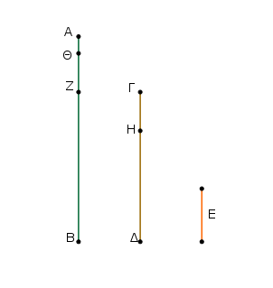
Εἰ γὰρ μή εἰσιν οἱ ΑΒ, ΓΔ πρῶτοι πρὸς ἀλλήλους, μετρήσει τις αὐτοὺς ἀριθμός. μετρείτω, καὶ ἔστω ὁ Ε· καὶ ὁ μὲν ΓΔ τὸν ΒΖ μετρῶν λειπέτω ἑαυτοῦ ἐλάσσονα τὸν ΖΑ, ὁ δὲ ΑΖ τὸν ΔΗ μετρῶν λειπέτω ἑαυτοῦ ἐλάσσονα τὸν ΗΓ, ὁ δὲ ΗΓ τὸν ΖΘ μετρῶν λειπέτω μονάδα τὴν ΘΑ.
᾿Επεὶ οὖν ὁ Ε τὸν ΓΔ μετρεῖ, ὁ δὲ ΓΔ τὸν ΒΖ μετρεῖ, καὶ ὁ Ε ἄρα τὸν ΒΖ μετρεῖ· μετρεῖ δὲ καὶ ὅλον τὸν ΒΑ· καὶ λοιπὸν ἄρα τὸν ΑΖ μετρήσει.
ὁ δὲ ΑΖ τὸν ΔΗ μετρεῖ· καὶ ὁ Ε ἄρα τὸν ΔΗ μετρεῖ· μετρεῖ δὲ καὶ ὅλον τὸν ΔΓ· καὶ λοιπὸν ἄρα τὸν ΓΗ μετρήσει.
ὁ δὲ ΓΗ τὸν ΖΘ μετρεῖ· καὶ ὁ Ε ἄρα τὸν ΖΘ μετρεῖ· μετρεῖ δὲ καὶ ὅλον τὸν ΖΑ· καὶ λοιπὴν ἄρα τὴν ΑΘ μονάδα μετρήσει ἀριθμὸς ὤν· ὅπερ ἐστὶν ἀδύνατον.
οὐκ ἄρα τοὺς ΑΒ, ΓΔ ἀριθμοὺς μετρήσει τις ἀριθμός· οἱ ΑΒ, ΓΔ ἄρα πρῶτοι πρὸς ἀλλήλους εἰσίν· ὅπερ ἔδει δεῖξαι.
Δύο ἀριθμῶν δοθέντων μὴ πρώτων πρὸς ἀλλήλους τὸ μέγιστον αὐτῶν κοινὸν μέτρον εὑρεῖν.
῎Εστωσαν οἱ δοθέντες δύο ἀριθμοὶ μὴ πρῶτοι πρὸς ἀλλήλους οἱ ΑΒ, ΓΔ. δεῖ δὴ τῶν ΑΒ, ΓΔ τὸ μέγιστον κοινὸν μέτρον εὑρεῖν.
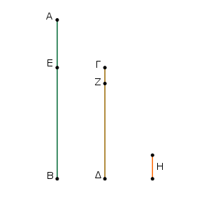
Εἰ μὲν οὖν ὁ ΓΔ τὸν ΑΒ μετρεῖ, μετρεῖ δὲ καὶ ἑαυτόν, ὁ ΓΔ ἄρα τῶν ΓΔ, ΑΒ κοινὸν μέτρον ἐστίν. καὶ φανερόν, ὅτι καὶ μέγιστον· οὐδεὶς γὰρ μείζων τοῦ ΓΔ τὸν ΓΔ μετρήσει.
Εἰ δὲ οὐ μετρεῖ ὁ ΓΔ τὸν ΑΒ, τῶν ΑΒ, ΓΔ ἀνθυφαιρουμένου ἀεὶ τοῦ ἐλάσσονος ἀπὸ τοῦ μείζονος λειφθήσεταί τις ἀριθμός, ὃς μετρήσει τὸν πρὸ ἑαυτοῦ. μονὰς μὲν γὰρ οὐ λειφθήσεται· εἰ δὲ μή, ἔσονται οἱ ΑΒ, ΓΔ πρῶτοι πρὸς ἀλλήλους· ὅπερ οὐχ ὑπόκειται. λειφθήσεταί τις ἄρα ἀριθμὸς, ὃς μετρήσει τὸν πρὸ ἑαυτοῦ. καὶ ὁ μὲν ΓΔ τὸν ΒΕ μετρῶν λειπέτω ἑαυτοῦ ἐλάσσονα τὸν ΕΑ, ὁ δὲ ΕΑ τὸν ΔΖ μετρῶν λειπέτω ἑαυτοῦ ἐλάσσονα τὸν ΖΓ, ὁ δὲ ΓΖ τὸν ΑΕ μετρείτω.
ἐπεὶ οὖν ὁ ΓΖ τὸν ΑΕ μετρεῖ, ὁ δὲ ΑΕ τὸν ΔΖ μετρεῖ, καὶ ὁ ΓΖ ἄρα τὸν ΔΖ μετρήσει. μετρεῖ δὲ καὶ ἑαυτόν· καὶ ὅλον ἄρα τὸν ΓΔ μετρήσει. ὁ δὲ ΓΔ τὸν ΒΕ μετρεῖ· καὶ ὁ ΓΖ ἄρα τὸν ΒΕ μετρεῖ· μετρεῖ δὲ καὶ τὸν ΕΑ· καὶ ὅλον ἄρα τὸν ΒΑ μετρήσει· μετρεῖ δὲ καὶ τὸν ΓΔ· ὁ ΓΖ ἄρα τοὺς ΑΒ, ΓΔ μετρεῖ. ὁ ΓΖ ἄρα τῶν ΑΒ, ΓΔ κοινὸν μέτρον ἐστίν.
λέγω δή, ὅτι καὶ μέγιστον. εἰ γὰρ μή ἐστιν ὁ ΓΖ τῶν ΑΒ, ΓΔ μέγιστον κοινὸν μέτρον, μετρήσει τις τοὺς ΑΒ, ΓΔ ἀριθμοὺς ἀριθμὸς μείζων ὢν τοῦ ΓΖ. μετρείτω, καὶ ἔστω ὁ Η.
καὶ ἐπεὶ ὁ Η τὸν ΓΔ μετρεῖ, ὁ δὲ ΓΔ τὸν ΒΕ μετρεῖ, καὶ ὁ Η ἄρα τὸν ΒΕ μετρεῖ· μετρεῖ δὲ καὶ ὅλον τὸν ΒΑ· καὶ λοιπὸν ἄρα τὸν ΑΕ μετρήσει. ὁ δὲ ΑΕ τὸν ΔΖ μετρεῖ· καὶ ὁ Η ἄρα τὸν ΔΖ μετρήσει· μετρεῖ δὲ καὶ ὅλον τὸν ΔΓ· καὶ λοιπὸν ἄρα τὸν ΓΖ μετρήσει ὁ μείζων τὸν ἐλάσσονα· ὅπερ ἐστὶν ἀδύνατον·
οὐκ ἄρα τοὺς ΑΒ, ΓΔ ἀριθμοὺς ἀριθμός τις μετρήσει μείζων ὢν τοῦ ΓΖ· ὁ ΓΖ ἄρα τῶν ΑΒ, ΓΔ μέγιστόν ἐστι κοινὸν μέτρον [ὅπερ ἔδει δεῖξαι].
Πόρισμα ᾿Εκ δὴ τούτου φανερόν, ὅτι ἐὰν ἀριθμὸς δύο ἀριθμοὺς μετρῇ, καὶ τὸ μέγιστον αὐτῶν κοινὸν μέτρον μετρήσει· ὅπερ ἔδει δεῖξαι.
Τριῶν ἀριθμῶν δοθέντων μὴ πρώτων πρὸς ἀλλήλους τὸ μέγιστον αὐτῶν κοινὸν μέτρον εὑρεῖν.
῎Εστωσαν οἱ δοθέντες τρεῖς ἀριθμοὶ μὴ πρῶτοι πρὸς ἀλλήλους οἱ Α, Β, Γ· δεῖ δὴ τῶν Α, Β, Γ τὸ μέγιστον κοινὸν μέτρον εὑρεῖν. Εἰλήφθω γὰρ δύο τῶν Α, Β τὸ μέγιστον κοινὸν μέτρον ὁ Δ· ὁ δὴ Δ τὸν Γ ἤτοι μετρεῖ ἢ οὐ μετρεῖ.
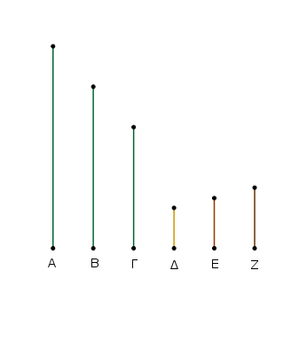
μετρείτω πρότερον· μετρεῖ δέ καὶ τοὺς Α, Β· ὁ Δ ἄρα τοὺς Α, Β, Γ μετρεῖ· ὁ Δ ἄρα τῶν Α, Β, Γ κοινὸν μέτρον ἐστίν. λέγω δή, ὅτι καὶ
μέγιστον.
εἰ γὰρ μή ἐστιν ὁ Δ τῶν Α, Β, Γ μέγιστον κοινὸν μέτρον, μετρήσει τις τοὺς Α, Β, Γ ἀριθμοὺς ἀριθμὸς μείζων ὢν τοῦ Δ. μετρείτω, καὶ ἔστω ὁ Ε. ἐπεὶ οὖν ὁ Ε τοὺς Α, Β, Γ μετρεῖ, καὶ τοὺς Α, Β ἄρα μετρήσει· καὶ τὸ τῶν Α, Β ἄρα μέγιστον κοινὸν μέτρον μετρήσει. τὸ δὲ τῶν Α, Β μέγιστον κοινὸν μέτρον ἐστὶν ὁ Δ· ὁ Ε ἄρα τὸν Δ μετρεῖ ὁ μείζων τὸν ἐλάσσονα· ὅπερ ἐστὶν ἀδύνατον. οὐκ ἄρα τοὺς Α, Β, Γ ἀριθμοὺς ἀριθμός τις μετρήσει μείζων ὢν τοῦ Δ· ὁ Δ ἄρα τῶν Α, Β, Γ μέγιστόν ἐστι κοινὸν μέτρον.
Μὴ μετρείτω δὴ ὁ Δ τὸν Γ· λέγω πρῶτον, ὅτι οἱ Γ, Δ οὔκ εἰσι πρῶτοι πρὸς ἀλλήλους.
ἐπεὶ γὰρ οἱ Α, Β, Γ οὔκ εἰσι πρῶτοι πρὸς ἀλλήλους, μετρήσει τις αὐτοὺς ἀριθμός. ὁ δὴ τοὺς Α, Β, Γ μετρῶν καὶ τοὺς Α, Β μετρήσει, καὶ τὸ τῶν Α, Β μέγιστον κοινὸν μέτρον τὸν Δ μετρήσει· μετρεῖ δὲ καὶ τὸν Γ· τοὺς Δ, Γ ἄρα ἀριθμοὺς ἀριθμός τις μετρήσει· οἱ Δ, Γ ἄρα οὔκ εἰσι πρῶτοι πρὸς ἀλλήλους.
εἰλήφθω οὖν αὐτῶν τὸ μέγιστον κοινὸν μέτρον ὁ Ε. καὶ ἐπεὶ ὁ Ε τὸν Δ μετρεῖ, ὁ δὲ Δ τοὺς Α, Β μετρεῖ, καὶ ὁ Ε ἄρα τοὺς Α, Β μετρεῖ· μετρεῖ δὲ καὶ τὸν Γ· ὁ Ε ἄρα τοὺς Α, Β, Γ μετρεῖ. ὁ Ε ἄρα τῶν Α, Β, Γ κοινόν ἐστι μέτρον.
λέγω δή, ὅτι καὶ μέγιστον. εἰ γὰρ μή ἐστιν ὁ Ε τῶν Α, Β, Γ τὸ μέγιστον κοινὸν μέτρον, μετρήσει τις τοὺς Α, Β, Γ ἀριθμοὺς ἀριθμὸς μείζων ὢν τοῦ Ε. μετρείτω, καὶ ἔστω ὁ Ζ.
καὶ ἐπεὶ ὁ Ζ τοὺς Α, Β, Γ μετρεῖ, καὶ τοὺς Α, Β μετρεῖ· καὶ τὸ τῶν Α, Β ἄρα μέγιστον κοινὸν μέτρον μετρήσει. τὸ δὲ τῶν Α, Β μέγιστον κοινὸν μέτρον ἐστὶν ὁ Δ· ὁ Ζ ἄρα τὸν Δ μετρεῖ· μετρεῖ δὲ καὶ τὸν Γ· ὁ Ζ ἄρα τοὺς Δ, Γ μετρεῖ· καὶ τὸ τῶν Δ, Γ ἄρα μέγιστον κοινὸν μέτρον μετρήσει. τὸ δὲ τῶν Δ, Γ μέγιστον κοινὸν μέτρον ἐστὶν ὁ Ε· ὁ Ζ ἄρα τὸν Ε μετρεῖ ὁ μείζων τὸν ἐλάσσονα· ὅπερ ἐστὶν ἀδύνατον.
οὐκ ἄρα τοὺς Α, Β, Γ ἀριθμοὺς ἀριθμός τις μετρήσει μείζων ὢν τοῦ Ε· ὁ Ε ἄρα τῶν Α, Β, Γ μέγιστόν ἐστι κοινὸν μέτρον· ὅπερ ἔδει δεῖξαι.
῞Απας ἀριθμὸς παντὸς ἀριθμοῦ ὁ ἐλάσσων τοῦ μείζονος ἤτοι μέρος ἐστὶν ἢ μέρη.
῎Εστωσαν δύο ἀριθμοὶ οἱ Α, ΒΓ, καὶ ἔστω ἐλάσσων ὁ ΒΓ· λέγω, ὅτι ὁ ΒΓ τοῦ Α ἤτοι μέρος ἐστὶν ἢ μέρη.
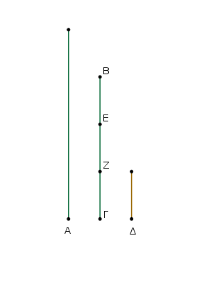
Οἱ Α, ΒΓ γὰρ ἤτοι πρῶτοι πρὸς ἀλλήλους εἰσὶν ἢ οὔ. ἔστωσαν πρότερον οἱ Α, ΒΓ πρῶτοι πρὸς ἀλλήλους. διαιρεθέντος δὴ τοῦ ΒΓ εἰς τὰς ἐν αὐτῷ μονάδας ἔσται ἑκάστη μονὰς τῶν ἐν τῷ ΒΓ μέρος τι τοῦ Α· ὥστε μέρη ἐστὶν ὁ ΒΓ τοῦ Α.
Μὴ ἔστωσαν δὴ οἱ Α, ΒΓ πρῶτοι πρὸς ἀλλήλους· ὁ δὴ ΒΓ τὸν Α ἤτοι μετρεῖ ἢ οὐ μετρεῖ. εἰ μὲν οὖν ὁ ΒΓ τὸν Α μετρεῖ, μέρος ἐστὶν ὁ ΒΓ τοῦ Α.
εἰ δὲ οὔ, εἰλήφθω τῶν Α, ΒΓ μέγιστον κοινὸν μέτρον ὁ Δ, καὶ διῃρήσθω ὁ ΒΓ εἰς τοὺς τῷ Δ ἴσους τοὺς ΒΕ, ΕΖ, ΖΓ. καὶ ἐπεὶ ὁ Δ τὸν Α μετρεῖ, μέρος ἐστὶν ὁ Δ τοῦ Α· ἴσος δὲ ὁ Δ ἑκάστῳ τῶν ΒΕ, ΕΖ, ΖΓ· καὶ ἕκαστος ἄρα τῶν ΒΕ, ΕΖ, ΖΓ τοῦ Α μέρος ἐστίν· ὥστε μέρη ἐστὶν ὁ ΒΓ τοῦ Α.
῞Απας ἄρα ἀριθμὸς παντὸς ἀριθμοῦ ὁ ἐλάσσων τοῦ μείζονος ἤτοι μέρος ἐστὶν ἢ μέρη· ὅπερ ἔδει δεῖξαι.
᾿Εὰν ἀριθμὸς ἀριθμοῦ μέρος ᾖ, καὶ ἕτερος ἑτέρου τὸ αὐτὸ μέρος ᾖ, καὶ συναμφότερος συναμφοτέρου τὸ αὐτὸ μέρος ἔσται, ὅπερ ὁ εἷς τοῦ ἑνός.
᾿Αριθμὸς γὰρ ὁ Α [ἀριθμοῦ] τοῦ ΒΓ μέρος ἔστω, καὶ ἕτερος ὁ Δ ἑτέρου τοῦ ΕΖ τὸ αὐτὸ μέρος, ὅπερ ὁ Α τοῦ ΒΓ· λέγω, ὅτι καὶ συναμφότερος ὁ Α, Δ συναμφοτέρου τοῦ ΒΓ, ΕΖ τὸ αὐτὸ μέρος ἐστίν, ὅπερ ὁ Α τοῦ ΒΓ.
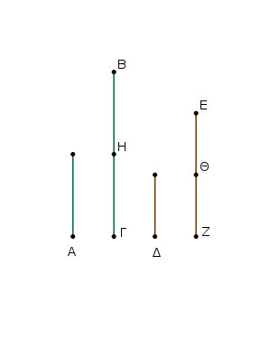
᾿Επεὶ γάρ, ὃ μέρος ἐστὶν ὁ Α τοῦ ΒΓ, τὸ αὐτὸ μέρος ἐστὶ καὶ ὁ Δ τοῦ ΕΖ, ὅσοι ἄρα εἰσὶν ἐν τῷ ΒΓ ἀριθμοὶ ἴσοι τῷ Α, τοσοῦτοί εἰσι καὶ ἐν τῷ ΕΖ ἀριθμοὶ ἴσοι τῷ Δ.
διῇρήσθω ὁ μὲν ΒΓ εἰς τοὺς τῷ Α ἴσους τοὺς ΒΗ, ΗΓ, ὁ δὲ ΕΖ εἰς τοὺς τῷ Δ ἴσους τοὺς ΕΘ, ΘΖ· ἔσται δὴ ἴσον τὸ πλῆθος τῶν ΒΗ, ΗΓ τῷ πλήθει τῶν ΕΘ, ΘΖ.
καὶ ἐπεὶ ἴσος ἐστὶν ὁ μὲν ΒΗ τῷ Α, ὁ δὲ ΕΘ τῷ Δ, καὶ οἱ ΒΗ, ΕΘ ἄρα τοῖς Α, Δ ἴσοι. διὰ τὰ αὐτὰ δὴ καὶ οἱ ΗΓ, ΘΖ τοῖς Α, Δ. ὅσοι ἄρα [εἰσὶν] ἐν τῷ ΒΓ ἀριθμοὶ ἴσοι τῷ Α, τοσοῦτοί εἰσι καὶ ἐν τοῖς ΒΓ, ΕΖ ἴσοι τοῖς Α, Δ. ὁσαπλασίων ἄρα ἐστὶν ὁ ΒΓ τοῦ Α, τοσαυταπλασίων ἐστὶ καὶ συναμφότερος ὁ ΒΓ, ΕΖ συναμφοτέρου τοῦ Α, Δ.
ὃ ἄρα μέρος ἐστὶν ὁ Α τοῦ ΒΓ, τὸ αὐτὸ μέρος ἐστὶ καὶ συναμφότερος ὁ Α, Δ συναμφοτέρου τοῦ ΒΓ, ΕΖ· ὅπερ ἔδει δεῖξαι.
᾿Εὰν ἀριθμὸς ἀριθμοῦ μέρη ᾖ, καὶ ἕτερος ἑτέρου τὰ αὐτὰ μέρη ᾖ, καὶ συναμφότερος συναμφοτέρου τὰ αὐτὰ μέρη ἔσται, ὅπερ ὁ εἷς τοῦ ἑνός.
᾿Αριθμὸς γὰρ ὁ ΑΒ ἀριθμοῦ τοῦ Γ μέρη ἔστω, καὶ ἕτερος ὁ ΔΕ ἑτέρου τοῦ Ζ τὰ αὐτὰ μέρη, ἅπερ ὁ ΑΒ τοῦ Γ· λέγω, ὅτι καὶ συναμφότερος ὁ ΑΒ, ΔΕ συναμφοτέρου τοῦ Γ, Ζ τὰ αὐτὰ μέρη ἐστίν, ἅπερ ὁ ΑΒ τοῦ Γ.
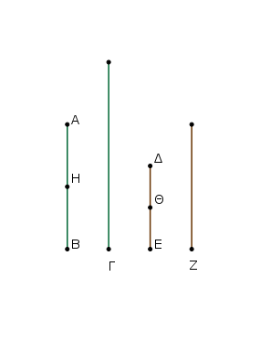
᾿Επεὶ γάρ, ἃ μέρη ἐστὶν ὁ ΑΒ τοῦ Γ, τὰ αὐτὰ μέρη καὶ ὁ ΔΕ τοῦ Ζ, ὅσα ἄρα ἐστὶν ἐν τῷ ΑΒ μέρη τοῦ Γ, τοσαῦτά ἐστι καὶ ἐν τῷ ΔΕ μέρη τοῦ Ζ. διῃρήσθω ὁ μὲν ΑΒ εἰς τὰ τοῦ Γ μέρη τὰ ΑΗ, ΗΒ, ὁ δὲ ΔΕ εἰς τὰ τοῦ Ζ μέρη τὰ ΔΘ, ΘΕ·
ἔσται δὴ ἴσον τὸ πλῆθος τῶν ΑΗ, ΗΒ τῷ πλήθει τῶν ΔΘ, ΘΕ. καὶ ἐπεί, ὃ μέρος ἐστὶν ὁ ΑΗ τοῦ Γ, τὸ αὑτὸ μέρος ἐστὶ καὶ ὁ ΔΘ τοῦ Ζ, ὃ ἄρα μέρος ἐστὶν ὁ ΑΗ τοῦ Γ, τὸ αὐτὸ μέρος ἐστὶ καὶ συναμφότερος ὁ ΑΗ, ΔΘ συναμφοτέρου τοῦ Γ, Ζ.
διὰ τὰ αὐτὰ δὴ καὶ ὃ μέρος ἐστὶν ὁ ΗΒ τοῦ Γ, τὸ αὐτὸ μέρος ἐστὶ καὶ συναμφότερος ὁ ΗΒ, ΘΕ συναμφοτέρου τοῦ Γ, Ζ. ἃ ἄρα μέρη ἐστὶν ὁ ΑΒ τοῦ Γ, τὰ αὐτὰ μέρη ἐστὶ καὶ συναμφότερος ὁ ΑΒ, ΔΕ συναμφοτέρου τοῦ Γ, Ζ· ὅπερ ἔδει δεῖξαι.
᾿Εὰν ἀριθμὸς ἀριθμοῦ μέρος ᾖ, ὅπερ ἀφαιρεθεὶς ἀφαιρεθέντος, καὶ ὁ λοιπὸς τοῦ λοιποῦ τὸ αὐτὸ μέρος ἔσται, ὅπερ ὁ ὅλος τοῦ ὅλου.
᾿Αριθμὸς γὰρ ὁ ΑΒ ἀριθμοῦ τοῦ ΓΔ μέρος ἔστω, ὅπερ ἀφαιρεθεὶς ὁ ΑΕ ἀφαιρεθέντος τοῦ ΓΖ· λέγω, ὅτι καὶ λοιπὸς ὁ ΕΒ λοιποῦ τοῦ ΖΔ τὸ αὐτὸ μέρος ἐστίν, ὅπερ ὅλος ὁ ΑΒ ὅλου τοῦ ΓΔ.
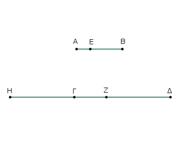
῝Ο γὰρ μέρος ἐστὶν ὁ ΑΕ τοῦ ΓΖ, τὸ αὐτὸ μέρος ἔστω καὶ ὁ ΕΒ τοῦ ΓΗ. καὶ ἐπεί, ὃ μέρος ἐστὶν ὁ ΑΕ τοῦ ΓΖ, τὸ αὐτὸ μέρος ἐστὶ καὶ ὁ ΕΒ τοῦ ΓΗ, ὃ ἄρα μέρος ἐστὶν ὁ ΑΕ τοῦ ΓΖ, τὸ αὐτὸ μέρος ἐστὶ καὶ ὁ ΑΒ τοῦ ΗΖ.
ὃ δὲ μέρος ἐστὶν ὁ ΑΕ τοῦ ΓΖ, τὸ αὐτὸ μέρος ὑπόκειται καὶ ὁ ΑΒ τοῦ ΓΔ· ὃ ἄρα μέρος ἐστὶ καὶ ὁ ΑΒ τοῦ ΗΖ, τὸ αὐτὸ μέρος ἐστὶ καὶ τοῦ ΓΔ· ἴσος ἄρα ἐστὶν ὁ ΗΖ τῷ ΓΔ. κοινὸς ἀφῃρήσθω ὁ ΓΖ· λοιπὸς ἄρα ὁ ΗΓ λοιπῷ τῷ ΖΔ ἐστιν ἴσος.
καὶ ἐπεί, ὃ μέρος ἐστὶν ὁ ΑΕ τοῦ ΓΖ, τὸ αὐτὸ μέρος [ἐστὶ] καὶ ὁ ΕΒ τοῦ ΗΓ, ἴσος δὲ ὁ ΗΓ τῷ ΖΔ, ὃ ἄρα μέρος ἐστὶν ὁ ΑΕ τοῦ ΓΖ, τὸ αὐτὸ μέρος ἐστὶ καὶ ὁ ΕΒ τοῦ ΖΔ.
ἀλλὰ ὃ μέρος ἐστὶν ὁ ΑΕ τοῦ ΓΖ, τὸ αὐτὸ μέρος ἐστὶ καὶ ὁ ΑΒ τοῦ ΓΔ· καὶ λοιπὸς ἄρα ὁ ΕΒ λοιποῦ τοῦ ΖΔ τὸ αὐτὸ μέρος ἐστίν, ὅπερ ὅλος ὁ ΑΒ ὅλου τοῦ ΓΔ· ὅπερ ἔδει δεῖξαι.
᾿Εὰν ἀριθμὸς ἀριθμοῦ μέρη ᾖ, ἅπερ ἀφαιρεθεὶς ἀφαιρεθέντος, καὶ ὁ λοιπὸς τοῦ λοιποῦ τὰ αὐτὰ μέρη ἔσται, ἅπερ ὁ ὅλος τοῦ ὅλου.
᾿Αριθμὸς γὰρ ὁ ΑΒ ἀριθμοῦ τοῦ ΓΔ μέρη ἔστω, ἅπερ ἀφαιρεθεὶς ὁ ΑΕ ἀφαιρεθέντος τοῦ ΓΖ· λέγω, ὅτι καὶ λοιπὸς ὁ ΕΒ λοιποῦ τοῦ ΖΔ τὰ αὐτὰ μέρη ἐστίν, ἅπερ ὅλος ὁ ΑΒ ὅλου τοῦ ΓΔ.
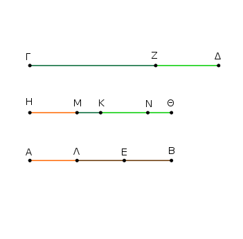
Κείσθω γὰρ τῷ ΑΒ ἴσος ὁ ΗΘ, ἃ ἄρα μέρη ἐστὶν ὁ ΗΘ τοῦ ΓΔ, τὰ αὐτὰ μέρη ἐστὶ καὶ ὁ ΑΕ τοῦ ΓΖ.
διῃρήσθω ὁ μὲν ΗΘ εἰς τὰ τοῦ ΓΔ μέρη τὰ ΗΚ, ΚΘ, ὁ δὲ ΑΕ εἰς τὰ τοῦ ΓΖ μέρη τὰ ΑΛ, ΛΕ· ἔσται δὴ ἴσον τὸ πλῆθος τῶν ΗΚ, ΚΘ τῷ πλήθει τῶν ΑΛ, ΛΕ. καὶ ἐπεί, ὃ μέρος ἐστὶν ὁ ΗΚ τοῦ ΓΔ, τὸ αὐτὸ μέρος ἐστὶ καὶ ὁ ΑΛ τοῦ ΓΖ, μείζων δὲ ὁ ΓΔ τοῦ ΓΖ, μείζων ἄρα καὶ ὁ ΗΚ τοῦ ΑΛ.
κείσθω τῷ ΑΛ ἴσος ὁ ΗΜ. ὃ ἄρα μέρος ἐστὶν ὁ ΗΚ τοῦ ΓΔ, τὸ αὐτὸ μέρος ἐστὶ καὶ ὁ ΗΜ τοῦ ΓΖ· καὶ λοιπὸς ἄρα ὁ ΜΚ λοιποῦ τοῦ ΖΔ τὸ αὐτὸ μέρος ἐστίν, ὅπερ ὅλος ὁ ΗΚ ὅλου τοῦ ΓΔ.
πάλιν ἐπεί, ὃ μέρος ἐστὶν ὁ ΚΘ τοῦ ΓΔ, τὸ αὐτὸ μέρος ἐστὶ καὶ ὁ ΕΛ τοῦ ΓΖ, μείζων δὲ ὁ ΓΔ τοῦ ΓΖ, μείζων ἄρα καὶ ὁ ΘΚ τοῦ ΕΛ.
κείσθω τῷ ΕΛ ἴσος ὁ ΚΝ. ὃ ἄρα μέρος ἐστὶν ὁ ΚΘ τοῦ ΓΔ, τὸ αὐτὸ μέρος ἐστὶ καὶ ὁ ΚΝ τοῦ ΓΖ· καὶ λοιπὸς ἄρα ὁ ΝΘ λοιποῦ τοῦ ΖΔ τὸ αὐτὸ μέρος ἐστίν, ὅπερ ὅλος ὁ ΚΘ ὅλου τοῦ ΓΔ. ἐδείχθη δὲ καὶ λοιπὸς ὁ ΜΚ λοιποῦ τοῦ ΖΔ τὸ αὐτὸ μέρος ὤν, ὅπερ ὅλος ὁ ΗΚ ὅλου τοῦ ΓΔ· καὶ συναμφότερος ἄρα ὁ ΜΚ, ΝΘ τοῦ ΔΖ τὰ αὐτὰ μέρη ἐστίν, ἅπερ ὅλος ὁ ΘΗ ὅλου τοῦ ΓΔ.
ἴσος δὲ συναμφότερος μὲν ὁ ΜΚ, ΝΘ τῷ ΕΒ, ὁ δὲ ΘΗ τῷ ΒΑ· καὶ λοιπὸς ἄρα ὁ ΕΒ λοιποῦ τοῦ ΖΔ τὰ αὐτὰ μέρη ἐστίν, ἅπερ ὅλος ὁ ΑΒ ὅλου τοῦ ΓΔ· ὅπερ ἔδει δεῖξαι.
᾿Εὰν ἀριθμὸς ἀριθμοῦ μέρος ᾖ, καὶ ἕτερος ἑτέρου τὸ αὐτὸ μέρος ᾖ, καὶ ἐναλλάξ, ὃ μέρος ἐστὶν ἢ μέρη ὁ πρῶτος τοῦ τρίτου, τὸ αὐτὸ μέρος ἔσται ἢ τὰ αὐτὰ μέρη καὶ ὁ δεύτερος τοῦ τετάρτου.
᾿Αριθμὸς γὰρ ὁ Α ἀριθμοῦ τοῦ ΒΓ μέρος ἔστω, καὶ ἕτερος ὁ Δ ἑτέρου τοῦ ΕΖ τὸ αὐτὸ μέρος, ὅπερ ὁ Α τοῦ ΒΓ· λέγω, ὅτι καὶ ἐναλλάξ, ὃ μέρος ἐστὶν ὁ Α τοῦ Δ ἢ μέρη, τὸ αὐτὸ μέρος ἐστὶ καὶ ὁ ΒΓ τοῦ ΕΖ ἢ μέρη.
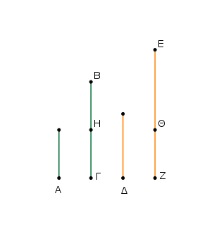
᾿Επεὶ γὰρ ὃ μέρος ἐστὶν ὁ Α τοῦ ΒΓ, τὸ αὐτὸ μέρος ἐστὶ καὶ ὁ Δ τοῦ ΕΖ, ὅσοι ἄρα εἰσὶν ἐν τῷ ΒΓ ἀριθμοὶ ἴσοι τῷ Α, τοσοῦτοί εἰσι καὶ ἐν τῷ ΕΖ ἴσοι τῷ Δ.
διῃρήσθω ὁ μὲν ΒΓ εἰς τοὺς τῷ Α ἴσους τοὺς ΒΗ, ΗΓ, ὁ δὲ ΕΖ εἰς τοὺς τῷ Δ ἴσους τοὺς ΕΘ, ΘΖ· ἔσται δὴ ἴσον τὸ πλῆθος τῶν ΒΗ, ΗΓ τῷ πλήθει τῶν ΕΘ, ΘΖ.
Καὶ ἐπεὶ ἴσοι εἰσὶν οἱ ΒΗ, ΗΓ ἀριθμοὶ ἀλλήλοις, εἰσὶ δὲ καὶ οἱ ΕΘ, ΘΖ ἀριθμοὶ ἴσοι ἀλλήλοις, καί ἐστιν ἴσον τὸ πλῆθος τῶν ΒΗ, ΗΓ τῷ πλήθει τῶν ΕΘ, ΘΖ, ὃ ἄρα μέρος ἐστὶν ὁ ΒΗ τοῦ ΕΘ ἢ μέρη, τὸ αὐτὸ μέρος ἐστὶ καὶ ὁ ΗΓ τοῦ ΘΖ ἢ τὰ αὐτὰ μέρη·
ὥστε καὶ ὃ μέρος ἐστὶν ὁ ΒΗ τοῦ ΕΘ ἢ μέρη, τὸ αὐτὸ μέρος ἐστὶ καὶ συναμφότερος ὁ ΒΓ συναμφοτέρου τοῦ ΕΖ ἢ τὰ αὐτὰ μέρη. ἴσος δὲ ὁ μὲν ΒΗ τῷ Α, ὁ δὲ ΕΘ τῷ Δ· ὃ ἄρα μέρος ἐστὶν ὁ Α τοῦ Δ ἢ μέρη, τὸ αὐτὸ μέρος ἐστὶ καὶ ὁ ΒΓ τοῦ ΕΖ ἢ τὰ αὐτὰ μέρη· ὅπερ ἔδει δεῖξαι.
᾿Εὰν ἀριθμὸς ἀριθμοῦ μέρη ᾖ, καὶ ἕτερος ἑτέρου τὰ αὐτὰ μέρη ᾖ, καὶ ἐναλλάξ, ἃ μέρη ἐστὶν ὁ πρῶτος τοῦ τρίτου ἢ μέρος, τὰ αὐτὰ μέρη ἔσται καὶ ὁ δεύτερος τοῦ τετάρτου ἢ τὸ αὐτὸ μέρος.
᾿Αριθμὸς γὰρ ὁ ΑΒ ἀριθμοῦ τοῦ Γ μέρη ἔστω, καὶ ἕτερος ὁ ΔΕ ἑτέρου τοῦ Ζ τὰ αὐτὰ μέρη· λέγω, ὅτι καὶ ἐναλλάξ, ἃ μέρη ἐστὶν ὁ ΑΒ τοῦ ΔΕ ἢ μέρος, τὰ αὐτὰ μέρη ἐστὶ καὶ ὁ Γ τοῦ Ζ ἢ τὸ αὐτὸ μέρος.
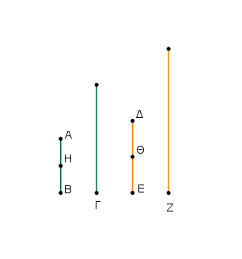
᾿Επεὶ γάρ, ἃ μέρη ἐστὶν ὁ ΑΒ τοῦ Γ, τὰ αὐτὰ μέρη ἐστὶ καὶ ὁ ΔΕ τοῦ Ζ, ὅσα ἄρα ἐστὶν ἐν τῷ ΑΒ μέρη τοῦ Γ, τοσαῦτα καὶ ἐν τῷ ΔΕ μέρη τοῦ Ζ.
διῃρήσθω ὁ μὲν ΑΒ εἰς τὰ τοῦ Γ μέρη τὰ ΑΗ, ΗΒ, ὁ δὲ ΔΕ εἰς τὰ τοῦ Ζ μέρη τὰ ΔΘ, ΘΕ· ἔσται δὴ ἴσον τὸ πλῆθος τῶν ΑΗ, ΗΒ τῷ πλήθει τῶν ΔΘ, ΘΕ. καὶ ἐπεί, ὃ μέρος ἐστὶν ὁ ΑΗ τοῦ Γ, τὸ αὐτὸ μέρος ἐστὶ καὶ ὁ ΔΘ τοῦ Ζ, καὶ ἐναλλάξ, ὃ μέρος ἐστὶν ὁ ΑΗ τοῦ ΔΘ ἢ μέρη, τὸ αὐτὸ μέρος ἐστὶ καὶ ὁ Γ τοῦ Ζ ἢ τὰ αὐτὰ μέρη. διὰ τὰ αὐτὰ δὴ καί, ὃ μέρος ἐστὶν ὁ ΗΒ τοῦ ΘΕ ἢ μέρη, τὸ αὐτὸ μέρος ἐστὶ καὶ ὁ Γ τοῦ Ζ ἢ τὰ αὐτὰ μέρη·
ὥστε καί [ὃ μέρος ἐστὶν ὁ ΑΗ τοῦ ΔΘ ἢ μέρη, τὸ αὐτὸ μέρος ἐστὶ καὶ ὁ ΗΒ τοῦ ΘΕ ἢ τὰ αὐτὰ μέρη· καὶ ὃ ἄρα μέρος ἐστὶν ὁ ΑΗ τοῦ ΔΘ ἢ μέρη, τὸ αὐτὸ μέρος ἐστὶ καὶ ὁ ΑΒ τοῦ ΔΕ ἢ τὰ αὐτὰ μέρη·
ἀλλ᾿ ὃ μέρος ἐστὶν ὁ ΑΗ τοῦ ΔΘ ἢ μέρη, τὸ αὐτὸ μέρος ἐδείχθη καὶ ὁ Γ τοῦ Ζ ἢ τὰ αὐτὰ μέρη, καὶ] ἃ [ἄρα] μέρη ἐστὶν ὁ ΑΒ τοῦ ΔΕ ἢ μέρος, τὰ αὐτὰ μέρη ἐστὶ καὶ ὁ Γ τοῦ Ζ ἢ τὸ αὐτὸ μέρος· ὅπερ ἔδει δεῖξαι.
᾿Εαν ᾖ ὡς ὅλος πρὸς ὅλον, οὕτως ἀφαιρεθεὶς πρὸς ἀφαιρεθέντα, καὶ ὁ λοιπὸς πρὸς τὸν λοιπὸν ἔσται, ὡς ὅλος πρὸς ὅλον.
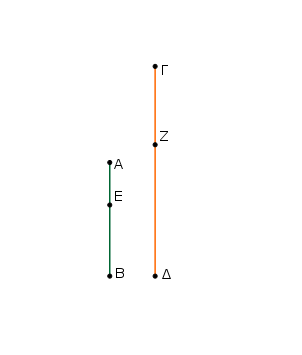
῎Εστω ὡς ὅλος ὁ ΑΒ πρὸς ὅλον τὸν ΓΔ, οὕτως ἀφαιρεθεὶς ὁ ΑΕ πρὸς ἀφαιρεθέντα τὸν ΓΖ· λέγω, ὅτι καὶ λοιπὸς ὁ ΕΒ πρὸς λοιπὸν τὸν ΖΔ ἐστιν, ὡς ὅλος ὁ ΑΒ πρὸς ὅλον τὸν ΓΔ.
᾿Επεί ἐστιν ὡς ὁ ΑΒ πρὸς τὸν ΓΔ, οὕτως ὁ ΑΕ πρὸς τὸν ΓΖ, ὃ ἄρα μέρος ἐστὶν ὁ ΑΒ τοῦ ΓΔ ἢ μέρη, τὸ αὐτὸ μέρος ἐστὶ καὶ ὁ ΑΕ τοῦ ΓΖ ἢ τὰ αὐτὰ μέρη. καὶ λοιπὸς ἄρα ὁ ΕΒ λοιποῦ τοῦ ΖΔ τὸ αὐτὸ μέρος ἐστὶν ἢ μέρη, ἅπερ ὁ ΑΒ τοῦ ΓΔ.
ἔστιν ἄρα ὡς ὁ ΕΒ πρὸς τὸν ΖΔ, οὕτως ὁ ΑΒ πρὸς τὸν ΓΔ· ὅπερ ἔδει δεῖξαι.
᾿Εὰν ὦσιν ὁποσοιοῦν ἀριθμοὶ ἀνάλογον, ἔσται ὡς εἷς τῶν ἡγουμένων πρὸς ἕνα τῶν ἑπομένων, οὕτως ἅπαντες οἱ ἡγούμενοι πρὸς ἅπαντας τοὺς ἑπομένους.
῎Εστωσαν ὁποσοιοῦν ἀριθμοὶ ἀνάλογον οἱ Α, Β, Γ, Δ, ὡς ὁ Α πρὸς τὸν Β, οὕτως ὁ Γ πρὸς τὸν Δ· λέγω, ὅτι ἐστὶν ὡς ὁ Α πρὸς τὸν Β, οὕτως οἱ Α, Γ πρὸς τοὺς Β, Δ.
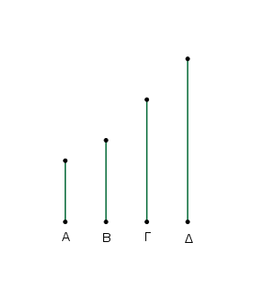
᾿Επεὶ γάρ ἐστιν ὡς ὁ Α πρὸς τὸν Β, οὕτως ὁ Γ πρὸς τὸν Δ, ὃ ἄρα μέρος ἐστὶν ὁ Α τοῦ Β ἢ μέρη, τὸ αὐτὸ μέρος ἐστὶ καὶ ὁ Γ τοῦ Δ ἢ μέρη.
καὶ συναμφότερος ἄρα ὁ Α, Γ συναμφοτέρου τοῦ Β, Δ τὸ αὐτὸ μέρος ἐστὶν ἢ τὰ αὐτὰ μέρη, ἅπερ ὁ Α τοῦ Β.
ἔστιν ἄρα ὡς ὁ Α πρὸς τὸν Β, οὕτως οἱ Α, Γ πρὸς τοὺς Β, Δ· ὅπερ ἔδει δεῖξαι.
᾿Εὰν τέσσαρες ἀριθμοὶ ἀνάλογον ὦσιν, καὶ ἐναλλὰξ ἀνάλογον ἔσονται.
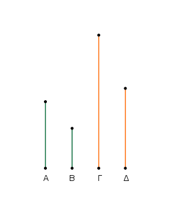
῎Εστωσαν τέσσαρες ἀριθμοὶ ἀνάλογον οἱ Α, Β, Γ, Δ, ὡς ὁ Α πρὸς τὸν Β, οὕτως ὁ Γ πρὸς τὸν Δ· λέγω, ὅτι καὶ ἐναλλὰξ ἀνάλογον ἔσονται, ὡς ὁ Α πρὸς τὸν Γ, οὕτως ὁ Β πρὸς τὸν Δ.
᾿Επεὶ γάρ ἐστιν ὡς ὁ Α πρὸς τὸν Β, οὕτως ὁ Γ πρὸς τὸν Δ, ὃ ἄρα μέρος ἐστὶν ὁ Α τοῦ Β ἢ μέρη, τὸ αὐτὸ μέρος ἐστὶ καὶ ὁ Γ τοῦ Δ ἢ τὰ αὐτὰ μέρη. ἐναλλὰξ ἄρα, ὃ μέρος ἐστὶν ὁ Α τοῦ Γ ἢ μέρη, τὸ αὐτὸ μέρος ἐστὶ καὶ ὁ Β τοῦ Δ ἢ τὰ αὐτὰ μέρη.
ἔστιν ἄρα ὡς ὁ Α πρὸς τὸν Γ, οὕτως ὁ Β πρὸς τὸν Δ· ὅπερ ἔδει δεῖξαι.
᾿Εὰν ὦσιν ὁποσοιοῦν ἀριθμοὶ καὶ ἄλλοι αὐτοῖς ἴσοι τὸ πλῆθος σύνδυο λαμβανόμενοι καὶ ἐν τῷ αὐτῷ λόγῳ, καὶ δι᾿ ἴσου ἐν τῷ αὐτῷ λόγῷ ἔσονται.
῎Εστωσαν ὁποσοιοῦν ἀριθμοὶ οἱ Α, Β, Γ καὶ ἄλλοι αὐτοῖς ἴσοι τὸ πλῆθος σύνδυο λαμβανόμενοι ἐν τῷ αὐτῷ λόγῳ οἱ Δ, Ε, Ζ, ὡς μὲν ὁ Α πρὸς τὸν Β, οὕτως ὁ Δ πρὸς τὸν Ε, ὡς δὲ ὁ Β πρὸς τὸν Γ, οὕτως ὁ Ε πρὸς τὸν Ζ· λέγω, ὅτι καὶ δι᾿ ἴσου ἐστὶν ὡς ὁ Α πρὸς τὸν Γ, οὕτως ὁ Δ πρὸς τὸν Ζ.
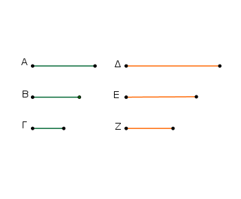
᾿Επεὶ γάρ ἐστιν ὡς ὁ Α πρὸς τὸν Β, οὕτως ὁ Δ πρὸς τὸν Ε, ἐναλλὰξ ἄρα ἐστὶν ὡς ὁ Α πρὸς τὸν Δ, οὕτως ὁ Β πρὸς τὸν Ε.
πάλιν, ἐπεί ἐστιν ὡς ὁ Β πρὸς τὸν Γ, οὕτως ὁ Ε πρὸς τὸν Ζ, ἐναλλὰξ ἄρα ἐστὶν ὡς ὁ Β πρὸς τὸν Ε, οὕτως ὁ Γ πρὸς τὸν Ζ.
ὡς δὲ ὁ Β πρὸς τὸν Ε, οὕτως ὁ Α πρὸς τὸν Δ· καὶ ὡς ἄρα ὁ Α πρὸς τὸν Δ, οὕτως ὁ Γ πρὸς τὸν Ζ· ἐναλλὰξ ἄρα ἐστὶν ὡς ὁ Α πρὸς τὸν Γ, οὕτως ὁ Δ πρὸς τὸν Ζ· ὅπερ ἔδει δεῖξαι.
᾿Εὰν μονὰς ἀριθμόν τινα μετρῇ, ἰσακις δὲ ἕτερος ἀριθμὸς ἄλλον τινὰ ἀριθμὸν μετρῇ, καὶ ἐναλλὰξ ἰσάκις ἡ μονὰς τὸν τρίτον ἀριθμὸν μετρήσει καὶ ὁ δεύτερος τὸν τέταρτον.
Μονὰς γὰρ ἡ Α ἀριθμόν τινα τὸν ΒΓ μετρείτω, ἰσάκις δὲ ἕτερος ἀριθμὸς ὁ Δ ἄλλον τινὰ ἀριθμὸν τὸν ΕΖ μετρείτω· λέγω, ὅτι καὶ ἐναλλὰξ ἰσάκις ἡ Α μονὰς τὸν Δ ἀριθμὸν μετρεῖ καὶ ὁ ΒΓ τὸν ΕΖ.
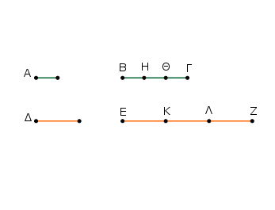
᾿Επεὶ γὰρ ἰσάκις ἡ Α μονὰς τὸν ΒΓ ἀριθμὸν μετρεῖ καὶ ὁ Δ τὸν ΕΖ, ὅσαι ἄρα εἰσὶν ἐν τῷ ΒΓ μονάδες, τοσοῦτοί εἰσι καὶ ἐν τῷ ΕΖ ἀριθμοὶ ἴσοι τῷ Δ.
διῃρήσθω ὁ μὲν ΒΓ εἰς τὰς ἐν ἑαυτῷ μονάδας τὰς ΒΗ, ΗΘ, ΘΓ, ὁ δὲ ΕΖ εἰς τοὺς τῷ Δ ἴσους τοὺς ΕΚ, ΚΛ, ΛΖ. ἔσται δὴ ἴσον τὸ πλῆθος τῶν ΒΗ, ΗΘ, ΘΓ τῷ πλήθει τῶν ΕΚ, ΚΛ, ΛΖ.
καὶ ἐπεὶ ἴσαι εἰσὶν αἱ ΒΗ, ΗΘ, ΘΓ μονάδες ἀλλήλαις, εἰσὶ δὲ καὶ οἱ ΕΚ, ΚΛ, ΛΖ ἀριθμοὶ ἴσοι ἀλλήλοις, καί ἐστιν ἴσον τὸ πλῆθος τῶν ΒΗ, ΗΘ, ΘΓ μονάδων τῷ πλήθει τῶν ΕΚ, ΚΛ, ΛΖ ἀριθμῶν, ἔσται ἄρα ὡς ἡ ΒΗ μονὰς πρὸς τὸν ΕΚ ἀριθμόν, οὕτως ἡ ΗΘ μονὰς πρὸς τὸν ΚΛ ἀριθμὸν καὶ ἡ ΘΓ μονὰς πρὸς τὸν ΛΖ ἀριθμόν.
ἔσται ἄρα καὶ ὡς εἷς τῶν ἡγουμένων πρὸς ἕνα τῶν ἑπομένων, οὕτως ἅπαντες οἱ ἡγούμενοι πρὸς ἅπαντας τοὺς ἑπομένους·
ἔστιν ἄρα ὡς ἡ ΒΗ μονὰς πρὸς τὸν ΕΚ ἀριθμόν, οὕτως ὁ ΒΓ πρὸς τὸν ΕΖ. ἴση δὲ ἡ ΒΗ μονὰς τῇ Α μονάδι, ὁ δὲ ΕΚ ἀριθμὸς τῷ Δ ἀριθμῷ.
ἔστιν ἄρα ὡς ἡ Α μονὰς πρὸς τὸν Δ ἀριθμόν, οὕτως ὁ ΒΓ πρὸς τὸν ΕΖ. ἰσάκις ἄρα ἡ Α μονὰς τὸν Δ ἀριθμὸν μετρεῖ καὶ ὁ ΒΓ τὸν ΕΖ· ὅπερ ἔδει δεῖξαι.
Εὰν δύο ἀριθμοὶ πολλαπλασιάσαντες ἀλλήλους ποιῶσί τινας, οἱ γενόμενοι ἐξ αὐτῶν ἴσοι ἀλλήλοις ἔσονται.
῎Εστωσαν δύο ἀριθμοὶ οἱ Α, Β, καὶ ὁ μὲν Α τὸν Β πολλαπλασιάσας τὸν Γ ποιείτω, ὁ δὲ Β τὸν Α πολλαπλασιάσας τὸν Δ ποιείτω· λέγω, ὅτι ἴσος ἐστὶν ὁ Γ τῷ Δ.
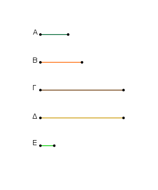
᾿Επεὶ γὰρ ὁ Α τὸν Β πολλαπλασιάσας τὸν Γ πεποίηκεν, ὁ Β ἄρα τὸν Γ μετρεῖ κατὰ τὰς ἐν τῷ Α μονάδας. μετρεῖ δὲ καὶ ἡ Ε μονὰς τὸν Α ἀριθμὸν κατὰ τὰς ἐν αὐτῷ μονάδας· ἰσάκις ἄρα ἡ Ε μονὰς τὸν Α ἀριθμὸν μετρεῖ καὶ ὁ Β τὸν Γ. ἐναλλὰξ ἄρα ἰσάκις ἡ Ε μονὰς τὸν Β ἀριθμὸν μετρεῖ καὶ ὁ Α τὸν Γ.
πάλιν, ἐπεὶ ὁ Β τὸν Α πολλαπλασιάσας τὸν Δ πεποίηκεν, ὁ Α ἄρα τὸν Δ μετρεῖ κατὰ τὰς ἐν τῷ Β μονάδας. μετρεῖ δὲ καὶ ἡ Ε μονὰς τὸν Β κατὰ τὰς ἐν αὐτῷ μονάδας· ἰσάκις ἄρα ἡ Ε μονὰς τὸν Β ἀριθμὸν μετρεῖ καὶ ὁ Α τὸν Δ. ἰσάκις δὲ ἡ Ε μονὰς τὸν Β ἀριθμὸν ἐμέτρει καὶ ὁ Α τὸν Γ· ἰσάκις ἄρα ὁ Α ἑκάτερον τῶν Γ, Δ μετρεῖ. ἴσος ἄρα ἐστὶν ὁ Γ τῷ Δ· ὅπερ ἔδει δεῖξαι.
᾿Εὰν ἀριθμὸς δύο ἀριθμοὺς πολλαπλασιάσας ποιῇ τινας, οἱ γενόμενοι ἐξ αὐτῶν τὸν αὐτὸν ἕξουσι λόγον τοῖς πολλαπλασιασθεῖσιν.
᾿Αριθμὸς γὰρ ὁ Α δύο ἀριθμοὺς τοὺς Β, Γ πολλαπλασιάσας τοὺς Δ, Ε ποιείτω· λέγω, ὅτι ἐστὶν ὡς ὁ Β πρὸς τὸν Γ, οὕτως ὁ Δ πρὸς τὸν Ε.
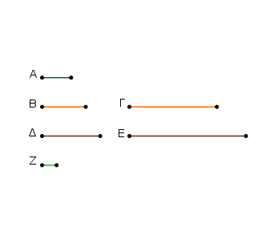
᾿Επεὶ γὰρ ὁ Α τὸν Β πολλαπλασιάσας τὸν Δ πεποίηκεν, ὁ Β ἄρα τὸν Δ μετρεῖ κατὰ τὰς ἐν τῷ Α μονάδας.
μετρεῖ δὲ καὶ ἡ Ζ μονὰς τὸν Α ἀριθμὸν κατὰ τὰς ἐν αὐτῷ μονάδας· ἰσάκις ἄρα ἡ Ζ μονὰς τὸν Α ἀριθμὸν μετρεῖ καὶ ὁ Β τὸν Δ. ἔστιν ἄρα ὡς ἡ Ζ μονὰς πρὸς τὸν Α ἀριθμόν, οὕτως ὁ Β πρὸς τὸν Δ.
διὰ τὰ αὐτὰ δὴ καὶ ὡς ἡ Ζ μονὰς πρὸς τὸν Α ἀριθμόν, οὕτως ὁ Γ πρὸς τὸν Ε· καὶ ὡς ἄρα ὁ Β πρὸς τὸν Δ, οὕτως ὁ Γ πρὸς τὸν Ε. ἐναλλὰξ ἄρα ἐστὶν ὡς ὁ Β πρὸς τὸν Γ, οὕτως ὁ Δ πρὸς τὸν Ε· ὅπερ ἔδει δεῖξαι.
᾿Εὰν δύο ἀριθμοὶ ἀριθμόν τινα πολλαπλασιάσαντες ποιῶσί τινας, οἱ γενόμενοι ἐξ αὐτῶν τὸν αὐτὸν ἕξουσι λόγον τοῖς πολλαπλασιάσασιν.
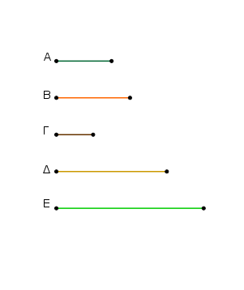
Δύο γὰρ ἀριθμοὶ οἱ Α, Β ἀριθμόν τινα τὸν Γ πολλαπλασιάσαντες τοὺς Δ, Ε ποιείτωσαν· λέγω, ὅτι ἐστὶν ὡς ὁ Α πρὸς τὸν Β, οὕτως ὁ Δ πρὸς τὸν Ε.
᾿Επεὶ γὰρ ὁ Α τὸν Γ πολλαπλασιάσας τὸν Δ πεποίηκεν, καὶ ὁ Γ ἄρα τὸν Α πολλαπλασιάσας τὸν Δ πεποίηκεν. διὰ τὰ αὐτὰ δὴ καὶ ὁ Γ τὸν Β πολλαπλασιάσας τὸν Ε πεποίηκεν. ἀριθμὸς δὴ ὁ Γ δύο ἀριθμοὺς τοὺς Α, Β πολλαπλασιάσας τοὺς Δ, Ε πεποίηκεν.
ἔστιν ἄρα ὡς ὁ Α πρὸς τὸν Β, οὕτως ὁ Δ πρὸς τὸν Ε· ὅπερ ἔδει δεῖξαι.
᾿Εὰν τέσσαρες ἀριθμοὶ ἀνάλογον ὦσιν, ὁ ἐκ πρώτου καὶ τετάρτου γενόμενος ἀριθμὸς ἴσος ἔσται τῷ ἐκ δευτέρου καὶ τρίτου γενομένῳ ἀριθμῷ· καὶ ἐὰν ὁ ἐκ πρώτου καὶ τετάρτου γενόμενος ἀριθμὸς ἴσος ᾖ τῷ ἐκ δευτέρου καὶ τρίτου, οἱ τέσσασρες ἀριθμοὶ ἀνάλογον ἔσονται.
῎Εστωσαν τέσσαρες ἀριθμοὶ ἀνάλογον οἱ Α, Β, Γ, Δ, ὡς ὁ Α πρὸς τὸν Β, οὕτως ὁ Γ πρὸς τὸν Δ, καὶ ὁ μὲν Α τὸν Δ πολλαπλασιάσας τὸν Ε ποιείτω, ὁ δὲ Β τὸν Γ πολλαπλασιάσας τὸν Ζ ποιείτω· λέγω, ὅτι ἴσος ἐστὶν ὁ Ε τῷ Ζ.
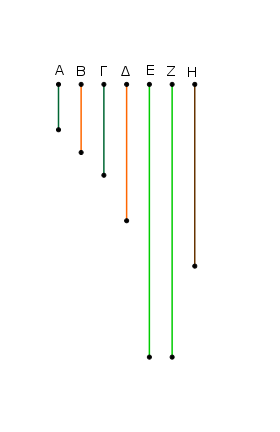
῾Ο γὰρ Α τὸν Γ πολλαπλασιάσας τὸν Η ποιείτω. ἐπεὶ οὖν ὁ Α τὸν Γ πολλαπλασιάσας τὸν Η πεποίηκεν, τὸν δὲ Δ πολλαπλασιάσας τὸν Ε πεποίηκεν, ἀριθμὸς δὴ ὁ Α δύο ἀριθμοὺς τοὺς Γ, Δ πολλαπλασιάσας τούς Η, Ε πεποίηκεν.
ἔστιν ἄρα ὡς ὁ Γ πρὸς τὸν Δ, οὕτως ὁ Η πρὸς τὸν Ε. ἀλλ᾿ ὡς ὁ Γ πρὸς τὸν Δ, οὕτως ὁ Α πρὸς τὸν Β· καὶ ὡς ἄρα ὁ Α πρὸς τὸν Β, οὕτως ὁ Η πρὸς τὸν Ε.
πάλιν, ἐπεὶ ὁ Α τὸν Γ πολλαπλασιάσας τὸν Η πεποίηκεν, ἀλλὰ μὴν καὶ ὁ Β τὸν Γ πολλαπλασιάσας τὸν Ζ πεποίηκεν, δύο δὴ ἀριθμοὶ οἱ Α, Β ἀριθμόν τινα τὸν Γ πολλαπλασιάσαντες τοὺς Η, Ζ πεποιήκασιν. ἔστιν ἄρα ὡς ὁ Α πρὸς τὸν Β, οὕτως ὁ Η πρὸς τὸν Ζ.
ἀλλὰ μὴν καὶ ὡς ὁ Α πρὸς τὸν Β, οὕτως ὁ Η πρὸς τὸν Ε· καὶ ὡς ἄρα ὁ Η πρὸς τὸν Ε, οὕτως ὁ Η πρὸς τὸν Ζ. ὁ Η ἄρα πρὸς ἑκάτερον τῶν Ε, Ζ τὸν αὐτὸν ἔχει λόγον· ἴσος ἄρα ἐστὶν ὁ Ε τῷ Ζ.
῎Εστω δὴ πάλιν ἴσος ὁ Ε τῷ Ζ· λέγω, ὅτι ἐστὶν ὡς ὁ Α πρὸς τὸν Β, οὕτως ὁ Γ πρὸς τὸν Δ.
Τῶν γὰρ αὐτῶν κατασκευασθέντων, ἐπεὶ ἴσος ἐστὶν ὁ Ε τῷ Ζ, ἔστιν ἄρα ὡς ὁ Η πρὸς τὸν Ε, οὕτως ὁ Η πρὸς τὸν Ζ. ἀλλ᾿ ὡς μὲν ὁ Η πρὸς τὸν Ε, οὕτως ὁ Γ πρὸς τὸν Δ, ὡς δὲ ὁ Η πρὸς τὸν Ζ, οὕτως ὁ Α πρὸς τὸν Β. καὶ ὡς ἄρα ὁ Α πρὸς τὸν Β, οὕτως ὁ Γ πρὸς τὸν Δ· ὅπερ ἔδει δεῖξαι.
Οἱ ἐλάχιστοι ἀριθμοὶ τῶν τὸν αὐτὸν λόγον ἐχόντων αὐτοῖς μετροῦσι τοὺς τὸν αὐτὸν λόγον ἔχοντας ἰσάκις ὅ τε μείζων τὸν μείζονα καὶ ὁ ἐλάσσων τὸν ἐλάσσονα.
῎Εστωσαν γὰρ ἐλάχιστοι ἀριθμοὶ τῶν τὸν αὐτὸν λόγον ἐχόντων τοῖς Α, Β οἱ ΓΔ, ΕΖ· λέγω, ὅτι ἰσάκις ὁ ΓΔ τὸν Α μετρεῖ καὶ ὁ ΕΖ τὸν Β.
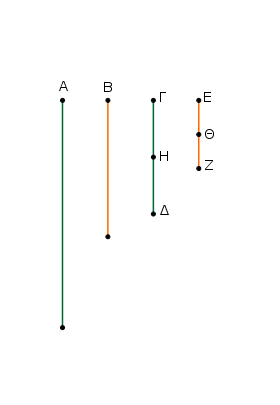
῾Ο ΓΔ γὰρ τοῦ Α οὔκ ἐστι μέρη. εἰ γὰρ δυνατόν, ἔστω· καὶ ὁ ΕΖ ἄρα τοῦ Β τὰ αὐτὰ μέρη ἐστίν, ἅπερ ὁ ΓΔ τοῦ Α. ὅσα ἄρα ἐστὶν ἐν τῷ ΓΔ μέρη τοῦ Α, τοσαῦτά ἐστι καὶ ἐν τῷ ΕΖ μέρη τοῦ Β.
διῃρήσθω ὁ μὲν ΓΔ εἰς τὰ τοῦ Α μέρη τὰ ΓΗ, ΗΔ, ὁ δὲ ΕΖ εἰς τὰ τοῦ Β μέρη τὰ ΕΘ, ΘΖ· ἔσται δὴ ἴσον τὸ πλῆθος τῶν ΓΗ, ΗΔ τῷ πλήθει τῶν ΕΘ, ΘΖ. καὶ ἐπεὶ ἴσοι εἰσὶν οἱ ΓΗ, ΗΔ ἀριθμοὶ ἀλλήλοις, εἰσὶ δὲ καὶ οἱ ΕΘ, ΘΖ ἀριθμοὶ ἴσοι ἀλλήλοις, καί ἐστιν ἴσον τὸ πλῆθος τῶν ΓΗ, ΗΔ τῷ πλήθει τῶν ΕΘ, ΘΖ, ἔστιν ἄρα ὡς ὁ ΓΗ πρὸς τὸν ΕΘ, οὕτως ὁ ΗΔ πρὸς τὸν ΘΖ.
ἔσται ἄρα καὶ ὡς εἷς τῶν ἡγουμένων πρὸς ἕνα τῶν ἑπομένων, οὕτως ἅπαντες οἱ ἡγούμενοι πρὸς ἅπαντας τοὺς ἑπομένους. ἔστιν ἄρα ὡς ὁ ΓΗ πρὸς τὸν ΕΘ, οὕτως ὁ ΓΔ πρὸς τὸν ΕΖ· οἱ ΓΗ, ΕΘ ἄρα τοῖς ΓΔ, ΕΖ ἐν τῷ αὐτῷ λόγῳ εἰσὶν ἐλάσσονες ὄντες αὐτῶν· ὅπερ ἐστὶν ἀδύνατον· ὑπόκεινται γὰρ οἱ ΓΔ, ΕΖ ἐλάχιστοι τῶν τὸν αὐτὸν λόγον ἐχόντων αὐτοῖς. οὐκ ἄρα μέρη ἐστὶν ὁ ΓΔ τοῦ Α· μέρος ἄρα. καὶ ὁ ΕΖ τοῦ Β τὸ αὐτὸ μέρος ἐστίν, ὅπερ ὁ ΓΔ τοῦ Α· ἰσάκις ἄρα ὁ ΓΔ τὸν Α μετρεῖ καὶ ὁ ΕΖ τὸν Β· ὅπερ ἔδει δεῖξαι.
Οἱ πρῶτοι πρὸς ἀλλήλους ἀριθμοὶ ἐλάχιστοί εἰσι τῶν τὸν αὐτὸν λόγον ἐχόντων αὐτοῖς.
῎Εστωσαν πρῶτοι πρὸς ἀλλήλους ἀριθμοὶ οἱ Α, Β· λέγω, ὅτι οἱ Α, Β ἐλάχιστοί εἰσι τῶν τὸν αὐτὸν λόγον ἐχόντων αὐτοῖς.
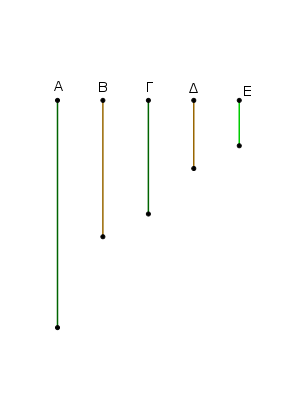
Εἰ γὰρ μή, ἔσονταί τινες τῶν Α, Β ἐλάσσονες ἀριθμοὶ ἐν τῷ αὐτῷ λόγῳ ὄντες τοῖς Α, Β. ἔστωσαν οἱ Γ, Δ.
᾿Επεὶ οὖν οἱ ἐλάχιστοι ἀριθμοὶ τῶν τὸν αὐτὸν λόγον ἐχόντων μετροῦσι τοὺς τὸν αὐτὸν λόγον ἔχοντας ἰσάκις ὅ τε μείζων τὸν μείζονα καὶ ὁ ἐλάττων τὸν ἐλάττονα, τουτέστιν ὅ τε ἡγούμενος τὸν ἡγούμενον καὶ ὁ ἑπόμενος τὸν ἑπόμενον, ἰσάκις ἄρα ὁ Γ τὸν Α μετρεῖ καὶ ὁ Δ τὸν Β.
ὁσάκις δὴ ὁ Γ τὸν Α μετρεῖ, τοσαῦται μονάδες ἔστωσαν ἐν τῷ Ε. καὶ ὁ Δ ἄρα τὸν Β μετρεῖ κατὰ τὰς ἐν τῷ Ε μονάδας. καὶ ἐπεὶ ὁ Γ τὸν Α μετρεῖ κατὰ τὰς ἐν τῷ Ε μονάδας, καί ὁ Ε ἄρα τὸν Α μετρεῖ κατὰ τὰς ἐν τῷ Γ μονάδας. διὰ τὰ αὐτὰ δὴ ὁ Ε καὶ τὸν Β μετρεῖ κατὰ τὰς ἐν τῷ Δ μονάδας. ὁ Ε ἄρα τοὺς Α, Β μετρεῖ πρώτους ὄντας πρὸς ἀλλήλους· ὅπερ ἐστὶν ἀδύνατον.
οὐκ ἄρα ἔσονταί τινες τῶν Α, Β ἐλάσσονες ἀριθμοὶ ἐν τῷ αὐτῷ λόγῳ ὄντες τοῖς Α, Β. οἱ Α, Β ἄρα ἐλάχιστοί εἰσι τῶν τὸν αὐτὸν λόγον ἐχόντων αὐτοῖς· ὅπερ ἔδει δεῖξαι.
Οἱ ἐλάχιστοι ἀριθμοὶ τῶν τὸν αὐτὸν λόγον ἐχόντων αὐτοῖς πρῶτοι πρὸς ἀλλήλους εἰσίν.
῎Εστωσαν ἐλάχιστοι ἀριθμοὶ τῶν τὸν αὐτὸν λόγον ἐχόντων αὐτοῖς οἱ Α, Β· λέγω, ὅτι οἱ Α, Β πρῶτοι πρὸς ἀλλήλους εἰσίν.
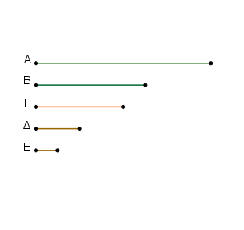
Εἰ γὰρ μή εἰσι πρῶτοι πρὸς ἀλλήλους, μετρήσει τις αὐτοὺς ἀριθμός. μετρείτω, καὶ ἔστω ὁ Γ. καὶ ὁσάκις μὲν ὁ Γ τὸν Α μετρεῖ, τοσαῦται μονάδες ἔστωσαν ἐν τῷ Δ,
ὁσάκις δὲ ὁ Γ τὸν Β μετρεῖ, τοσαῦται μονάδες ἔστωσαν ἐν τῷ Ε.
᾿Επεὶ ὁ Γ τὸν Α μετρεῖ κατὰ τὰς ἐν τῷ Δ μονάδας, ὁ Γ ἄρα τὸν Δ πολλαπλασιάσας τὸν Α πεποίηκεν. διὰ τὰ αὐτὰ δὴ καὶ ὁ Γ τὸν Ε πολλαπλασιάσας τὸν Β πεποίηκεν. ἀριθμὸς δὴ ὁ Γ δύο ἀριθμοὺς τοὺς Δ, Ε πολλαπλασιάσας τοὺς Α, Β πεποίηκεν· ἔστιν ἄρα ὡς ὁ Δ πρὸς τὸν Ε, οὕτως ὁ Α πρὸς τὸν Β· οἱ Δ, Ε ἄρα τοῖς Α, Β ἐν τῷ αὐτῷ λόγῳ εἰσὶν ἐλάσσονες ὄντες αὐτῶν· ὅπερ ἐστὶν ἀδύνατον.
οὐκ ἄρα τοὺς Α, Β ἀριθμοὺς ἀριθμός τις μετρήσει. οἱ Α, Β ἄρα πρῶτοι πρὸς ἀλλήλους εἰσίν· ὅπερ ἔδει δεῖξαι.
᾿Εὰν δύο ἀριθμοὶ πρῶτοι πρὸς ἀλλήλους ὦσιν, ὁ τὸν ἕνα αὐτῶν μετρῶν ἀριθμὸς πρὸς τὸν λοιπὸν πρῶτος ἔσται.
῎Εστωσαν δύο ἀριθμοὶ πρῶτοι πρὸς ἀλλήλους οἱ Α, Β, τὸν δὲ Α μετρείτω τις ἀριθμὸς ὁ Γ· λέγω, ὅτι καὶ οἱ Γ, Β πρῶτοι πρὸς ἀλλήλους εἰσίν.
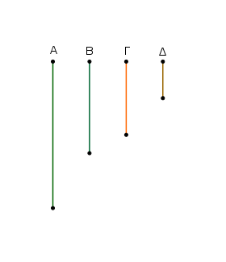
Εἰ γὰρ μή εἰσιν οἱ Γ, Β πρῶτοι πρὸς ἀλλήλους, μετρήσει [τις] τοὺς Γ, Β ἀριθμός. μετρείτω, καὶ ἔστω ὁ Δ. ἐπεὶ ὁ Δ τὸν Γ μετρεῖ, ὁ δὲ Γ τὸν Α μετρεῖ, καὶ ὁ Δ ἄρα τὸν Α μετρεῖ. μετρεῖ δὲ καὶ τὸν Β· ὁ Δ ἄρα τοὺς Α, Β μετρεῖ πρώτους ὄντας πρὸς ἀλλήλους· ὅπερ ἐστὶν ἀδύνατον.
οὐκ ἄρα τοὺς Γ, Β ἀριθμοὺς ἀριθμός τις μετρήσει. οἱ Γ, Β ἄρα πρῶτοι πρὸς ἀλλήλους εἰσίν· ὅπερ ἔδει δεῖξαι.
᾿Εὰν δύο ἀριθμοὶ πρός τινα ἀριθμὸν πρῶτοι ὦσιν, καὶ ὁ ἐξ αὐτῶν γενόμενος πρὸς τὸν αὐτὸν πρῶτος ἔσται.
Δύο γὰρ ἀριθμοὶ οἱ Α, Β πρός τινα ἀριθμὸν τὸν Γ πρῶτοι ἔστωσαν, καὶ ὁ Α τὸν Β πολλαπλασιάσας τὸν Δ ποιείτω· λέγω, ὅτι οἱ Γ, Δ πρῶτοι πρὸς ἀλλήλους εἰσίν.
Εἰ γὰρ μή εἰσιν οἱ Γ, Δ πρῶτοι πρὸς ἀλλήλους, μετρήσει [τις] τοὺς Γ, Δ ἀριθμός. μετρείτω, καὶ ἔστω ὁ Ε. καὶ ἐπεὶ οἱ Γ, Δ πρῶτοι πρὸς ἀλλήλους εἰσίν, τὸν δὲ Γ μετρεῖ τις ἀριθμὸς ὁ Ε, οἱ Α, Ε ἄρα πρῶτοι πρὸς ἀλλήλους εἰσίν. ὁσάκις δὴ ὁ Ε τὸν Δ μετρεῖ, τοσαῦται μονάδες ἔστωσαν ἐν τῷ Ζ· καὶ ὁ Ζ ἄρα τὸν Δ μετρεῖ κατὰ τὰς ἐν τῷ Ε μονάδας. ὁ Ε ἄρα τὸν Ζ πολλαπλασιάσας τὸν Δ πεποίηκεν.
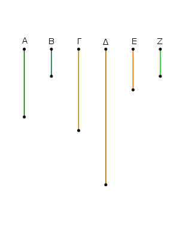
ἀλλὰ μὴν καὶ ὁ Α τὸν Β πολλαπλασιάσας τὸν Δ πεποίηκεν· ἴσος ἄρα ἐστὶν ὁ ἑκ τῶν Ε, Ζ τῷ ἐκ τῶν Α, Β. ἐὰν δὲ ὁ ὑπὸ τῶν ἄκρων ἴσος ᾖ τῷ ὑπὸ τῶν μέσων, οἱ τέσσαρες ἀριθμοὶ ἀνάλογόν εἰσιν· ἔστιν ἄρα ὡς ὁ Ε πρὸς τὸν Α, οὕτως ὁ Β πρὸς τὸν Ζ. οἱ δὲ Α, Ε πρῶτοι, οἱ δὲ πρῶτοι καὶ ἐλάχιστοι, οἱ δὲ ἐλάχιστοι ἀριθμοὶ τῶν τὸν αὐτὸν λόγον ἐχόντων αὐτοῖς μετροῦσι τοὺς τὸν αὐτὸν λόγον ἔχοντας ἰσάκις ὅ τε μείζων τὸν μείζονα καὶ ὁ ἐλάσσων τὸν ἐλάσσονα, τουτέστιν ὅ τε ἡγούμενος τὸν ἡγούμενον καὶ ὁ ἑπόμενος τὸν ἑπόμενον· ὁ Ε ἄρα τὸν Β μετρεῖ. μετρεῖ δὲ καὶ τὸν Γ· ὁ Ε ἄρα τοὺς Β, Γ μετρεῖ πρώτους ὄντας πρὸς ἀλλήλους· ὅπερ ἐστὶν ἀδύνατον.
οὐκ ἄρα τοὺς Γ, Δ ἀριθμοὺς ἀριθμός τις μετρήσει. οἱ Γ, Δ ἄρα πρῶτοι πρὸς ἀλλήλους εἰσίν· ὅπερ ἔδει δεῖξαι.
᾿Εὰν δύο ἀριθμοὶ πρῶτοι πρὸς ἀλλήλους ὦσιν, ὁ ἐκ τοῦ ἑνὸς αὐτῶν γενόμενος πρὸς τὸν λοιπὸν πρῶτος ἔσται.
῎Εστωσαν δύο ἀριθμοὶ πρῶτοι πρὸς ἀλλήλους οἱ Α, Β, καὶ ὁ Α ἑαυτὸν πολλαπλασιάσας τὸν Γ ποιείτω· λέγω, ὅτι οἱ Β, Γ πρῶτοι πρὸς ἀλλὴλους εἰσίν.
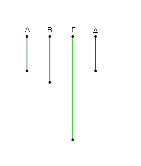
Κείσθω γὰρ τῷ Α ἴσος ὁ Δ. ἐπεὶ οἱ Α, Β πρῶτοι πρὸς ἀλλήλους εἰσίν, ἴσος δὲ ὁ Α τῷ Δ, καί οἱ Δ, Β ἄρα πρῶτοι πρὸς ἀλλήλους εἰσίν·
ἑκάτερος ἄρα τῶν Δ, Α πρὸς τὸν Β πρῶτός ἐστιν· καὶ ὁ ἐκ τῶν Δ, Α ἄρα γενόμενος πρὸς τὸν Β πρῶτος ἔσται. ὁ δὲ ἐκ τῶν Δ, Α γενόμενος ἀριθμός ἐστιν ὁ Γ.
οἱ Γ, Β ἄρα πρῶτοι πρὸς ἀλλήλους εἰσίν· ὅπερ ἔδει δεῖξαι.
᾿Εὰν δύο ἀριθμοὶ πρὸς δύο ἀριθμοὺς ἀμφότεροι πρὸς ἑκάτερον πρῶτοι ὦσιν, καὶ οἱ ἐξ αὐτῶν γενόμενοι πρῶτοι πρὸς ἀλλήλους ἔσονται.
Δύο γὰρ ἀριθμοὶ οἱ Α, Β πρὸς δύο ἀριθμοὺς τοὺς Γ, Δ ἀμφότεροι πρὸς ἑκάτερον πρῶτοι ἔστωσαν, καὶ ὁ μὲν Α τὸν Β πολλαπλασιάσας τὸν Ε ποιείτω, ὁ δὲ Γ τὸν Δ πολλαπλασιάσας τὸν Ζ ποιείτω· λέγω, ὅτι οἱ Ε, Ζ πρῶτοι πρὸς ἀλλήλους εἰσίν.
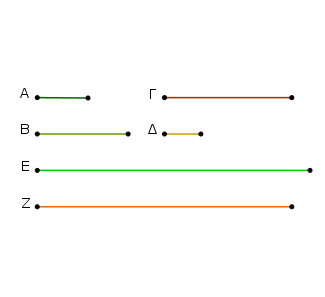
᾿Επεὶ γὰρ ἑκάτερος τῶν Α, Β πρὸς τὸν Γ πρῶτός ἐστιν, καὶ ὁ ἐκ τῶν Α, Β ἄρα γενόμενος πρὸς τὸν Γ πρῶτος ἔσται.
ὁ δὲ ἐκ τῶν Α, Β γενόμενός ἐστιν ὁ Ε· οἱ Ε, Γ ἄρα πρῶτοι πρὸς ἀλλήλους εἰσίν. διὰ τὰ αὐτὰ δὴ καὶ οἱ Ε, Δ πρῶτοι πρὸς ἀλλήλους εἰσίν.
ἑκάτερος ἄρα τῶν Γ, Δ πρὸς τὸν Ε πρῶτός ἐστιν. καὶ ὁ ἐκ τῶν Γ, Δ ἄρα γενόμενος πρὸς τὸν Ε πρῶτος ἔσται. ὁ δὲ ἐκ τῶν Γ, Δ γενόμενός ἐστιν ὁ Ζ. οἱ Ε, Ζ ἄρα πρῶτοι πρὸς ἀλλήλους εἰσίν· ὅπερ ἔδει δεῖξαι.
᾿Εὰν δύο ἀριθμοὶ πρῶτοι πρὸς ἀλλήλους ὦσιν, καὶ πολλαπλασιάσας ἑκάτερος ἑαυτὸν ποιῇ τινα, οἱ γενόμενοι ἐξ αὐτῶν πρῶτοι πρὸς ἀλλήλους ἔσονται, κἂν οἱ ἐξ ἀρχῆς τοὺς γενομένους πολλαπλασιάσαντες ποιῶσί τινας, κἀκεῖνοι πρῶτοι πρὸς ἀλλήλους ἔσονται [καὶ ἀεὶ περὶ τοὺς ἄκρους τοῦτο συμβαίνει].
῎Εστωσαν δύο ἀριθμοὶ πρῶτοι πρὸς ἀλλήλους οἱ Α, Β, καὶ ὁ Α ἑαυτὸν μὲν πολλαπλασιάσας τὸν Γ ποιείτω, τὸν δὲ Γ πολλαπλασιάσας τὸν Δ ποιείτω, ὁ δὲ Β ἑαυτὸν μὲν πολλαπλασιάσας τὸν Ε ποιείτω, τὸν δὲ Ε πολλαπλασιάσας τὸν Ζ ποιείτω· λέγω, ὅτι οἵ τε Γ, Ε καὶ οἱ Δ, Ζ πρῶτοι πρὸς ἀλλήλους εἰσίν.
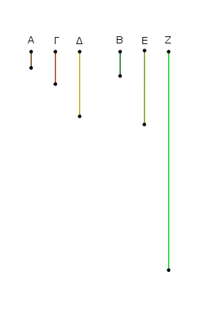
᾿Επεὶ γὰρ οἱ Α, Β πρῶτοι πρὸς ἀλλήλους εἰσίν, καὶ ὁ Α ἑαυτὸν πολλαπλασιάσας τὸν Γ πεποίηκεν, οἱ Γ, Β ἄρα πρῶτοι πρὸς ἀλλήλους εἰσίν.
ἐπεὶ οὖν οἱ Γ, Β πρῶτοι πρὸς ἀλλήλους εἰσίν, καὶ ὁ Β ἑαυτὸν πολλαπλασιάσας τὸν Ε πεποίηκεν, οἱ Γ, Ε ἄρα πρῶτοι πρὸς ἀλλήλους εἰσίν.
πάλιν, ἐπεὶ οἱ Α, Β πρῶτοι πρὸς ἀλλήλους εἰσίν, καὶ ὁ Β ἑαυτὸν πολλαπλασιάσας τὸν Ε πεποίηκεν, οἱ Α, Ε ἄρα πρῶτοι πρὸς ἀλλήλους εἰσίν.
ἐπεὶ οὖν δύο ἀριθμοὶ οἱ Α, Γ πρὸς δύο ἀριθμοὺς τοὺς Β, Ε ἀμφότεροι πρὸς ἑκάτερον πρῶτοί εἰσιν, καὶ ὁ ἐκ τῶν Α, Γ ἄρα γενόμενος πρὸς τὸν ἐκ τῶν Β, Ε πρῶτός ἐστιν.
καί ἐστιν ὁ μὲν ἐκ τῶν Α, Γ ὁ Δ, ὁ δὲ ἐκ τῶν Β, Ε ὁ Ζ. οἱ Δ, Ζ ἄρα πρῶτοι πρὸς ἀλλήλους εἰσίν· ὅπερ ἔδει δεῖξαι.
᾿Εὰν δύο ἀριθμοὶ πρῶτοι πρὸς ἀλλήλους ὦσιν, καὶ συναμφότερος πρὸς ἑκάτερον αὐτῶν πρῶτος ἔσται· καὶ ἐὰν συναμφότερος πρὸς ἕνα τινὰ αὐτῶν πρῶτος ᾖ, καὶ οἱ ἐξ ἀρχῆς ἀριθμοὶ πρῶτοι πρὸς ἀλλήλους ἔσονται.
Συγκείσθωσαν γὰρ δύο ἀριθμοὶ πρῶτοι πρὸς ἀλλήλους οἱ ΑΒ, ΒΓ· λέγω, ὅτι καὶ συναμφότερος ὁ ΑΓ πρὸς ἑκάτερον τῶν ΑΒ, ΒΓ πρῶτός ἐστιν.

Εἰ γὰρ μή εἰσιν οἱ ΓΑ, ΑΒ πρῶτοι πρὸς ἀλλήλους, μετρήσει τις τοὺς ΓΑ, ΑΒ ἀριθμός. μετρείτω, καὶ ἔστω ὁ Δ.
ἐπεὶ οὖν ὁ Δ τοὺς ΓΑ, ΑΒ μετρεῖ, καὶ λοιπὸν ἄρα τὸν ΒΓ μετρήσει. μετρεῖ δὲ καὶ τὸν ΒΑ· ὁ Δ ἄρα τοὺς ΑΒ, ΒΓ μετρεῖ πρώτους ὄντας πρὸς ἀλλήλους· ὅπερ ἐστὶν ἀδύνατον. οὐκ ἄρα τοὺς ΓΑ, ΑΒ ἀριθμοὺς ἀριθμός τις μετρήσει· οἱ ΓΑ, ΑΒ ἄρα πρῶτοι πρὸς ἀλλήλους εἰσίν.
διὰ τὰ αὐτὰ δὴ καὶ οἱ ΑΓ, ΓΒ πρῶτοι πρὸς ἀλλήλους εἰσίν. ὁ ΓΑ ἄρα πρὸς ἑκάτερον τῶν ΑΒ, ΒΓ πρῶτός ἐστιν.
῎Εστωσαν δὴ πάλιν οἱ ΓΑ, ΑΒ πρῶτοι πρὸς ἀλλήλους· λέγω, ὅτι καὶ οἱ ΑΒ, ΒΓ πρῶτοι πρὸς ἀλλήλους εἰσίν.
Εἰ γὰρ μή εἰσιν οἱ ΑΒ, ΒΓ πρῶτοι πρὸς ἀλλήλους, μετρήσει τις τοὺς ΑΒ, ΒΓ ἀριθμός. μετρείτω, καὶ ἔστω ὁ Δ.
καὶ ἐπεὶ ὁ Δ ἑκάτερον τῶν ΑΒ, ΒΓ μετρεῖ, καὶ ὅλον ἄρα τὸν ΓΑ μετρήσει. μετρεῖ δὲ καὶ τὸν ΑΒ· ὁ Δ ἄρα τοὺς ΓΑ, ΑΒ μετρεῖ πρώτους ὄντας πρὸς ἀλλήλους· ὅπερ ἐστὶν ἀδύνατον. οὐκ ἄρα τοὺς ΑΒ, ΒΓ ἀριθμοὺς ἀριθμός τις μετρήσει. οἱ ΑΒ, ΒΓ ἄρα πρῶτοι πρὸς ἀλλήλους εἰσίν· ὅπερ ἔδει δεῖξαι.
῞Απας πρῶτος ἀριθμὸς πρὸς ἅπαντα ἀριθμόν, ὃν μὴ μετρεῖ, πρῶτός ἐστιν.
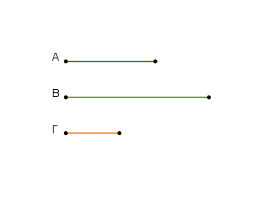
῎Εστω πρῶτος ἀριθμὸς ὁ Α καὶ τὸν Β μὴ μετρείτω· λέγω, ὅτι οἱ Β, Α πρῶτοι πρὸς ἀλλήλους εἰσίν.
Εἰ γὰρ μή εἰσιν οἱ Β, Α πρῶτοι πρὸς ἀλλήλους, μετρήσει τις αὐτοὺς ἀριθμός. μετρείτω ὁ Γ. ἐπεὶ ὁ Γ τὸν Β μετρεῖ, ὁ δὲ Α τὸν Β οὐ μετρεῖ, ὁ Γ ἄρα τῷ Α οὔκ ἐστιν ὁ αὐτός.
καὶ ἐπεὶ ὁ Γ τοὺς Β, Α μετρεῖ, καὶ τὸν Α ἄρα μετρεῖ πρῶτον ὄντα μὴ ὢν αὐτῷ ὁ αὐτός· ὅπερ ἐστὶν ἀδύνατον.
οὐκ ἄρα τοὺς Β, Α μετρήσει τις ἀριθμός. οἱ Α, Β ἄρα πρῶτοι πρὸς ἀλλήλους εἰσίν· ὅπερ ἔδει δεῖξαι.
᾿Εὰν δύο ἀριθμοὶ πολλαπλασιάσαντες ἀλλήλους ποιῶσί τινα, τὸν δὲ γενόμενον ἐξ αὐτῶν μετρῇ τις πρῶτος ἀριθμός, καὶ ἕνα τῶν ἐξ ἀρχῆς μετρήσει.
Δύο γὰρ ἀριθμοὶ οἱ Α, Β πολλαπλασιάσαντες ἀλλήλους τὸν Γ ποιείτωσαν, τὸν δὲ Γ μετρείτω τις πρῶτος ἀριθμὸς ὁ Δ· λέγω, ὅτι ὁ Δ ἕνα τῶν Α, Β μετρεῖ.
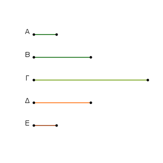
Τὸν γὰρ Α μὴ μετρείτω· καί ἐστι πρῶτος ὁ Δ· οἱ Α, Δ ἄρα πρῶτοι πρὸς ἀλλήλους εἰσίν. καὶ ὁσάκις ὁ Δ τὸν Γ μετρεῖ, τοσαῦται μονάδες ἔστωσαν ἐν τῷ Ε.
ἐπεὶ οὖν ὁ Δ τὸν Γ μετρεῖ κατὰ τὰς ἐν τῷ Ε μονάδας, ὁ Δ ἄρα τὸν Ε πολλαπλασιάσας τὸν Γ πεποίηκεν.
ἀλλὰ μὴν καὶ ὁ Α τὸν Β πολλαπλασιάσας τὸν Γ πεποίηκεν· ἴσος ἄρα ἐστὶν ὁ ἐκ τῶν Δ, Ε τῷ ἐκ τῶν Α, Β.
ἔστιν ἄρα ὡς ὁ Δ πρὸς τὸν Α, οὕτως ὁ Β πρὸς τὸν Ε. οἱ δὲ Δ, Α πρῶτοι, οἱ δὲ πρῶτοι καὶ ἐλάχιστοι, οἱ δὲ ἐλάχιστοι μετροῦσι τοὺς τὸν αὐτὸν λόγον ἔχοντας ἰσάκις ὅ τε μείζων τὸν μείζονα καὶ ὁ ἐλάσσων τὸν ἐλάσσονα, τουτέστιν ὅ τε ἡγούμενος τὸν ἡγούμενον καὶ ὁ ἐπόμενος τὸν ἑπόμενον· ὁ Δ ἄρα τὸν Β μετρεῖ.
ὁμοίως δὴ δείξομεν, ὅτι καὶ ἐὰν τὸν Β μὴ μετρῇ, τὸν Α μετρήσει. ὁ Δ ἄρα ἕνα τῶν Α, Β μετρεῖ· ὅπερ ἔδει δεῖξαι.
῞Απας σύνθεντος ἀριθμὸς ὑπὸ πρώτου τινὸς ἀριθμοῦ μετρεῖται.
῎Εστω σύνθετος ἀριθμὸς ὁ Α· λέγω, ὅτι ὁ Α ὑπὸ πρώτου τινὸς ἀριθμοῦ μετρεῖται.
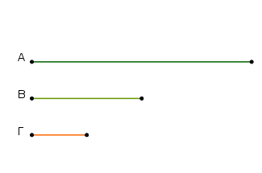
᾿Επεὶ γὰρ σύνθετός ἐστιν ὁ Α, μετρήσει τις αὐτὸν ἀριθμός. μετρείτω, καὶ ἔστω ὁ Β. καὶ εἰ μὲν πρῶτός ἐστιν ὁ Β, γεγονὸς ἂν εἴη τὸ ἐπιταχθέν.
εἰ δὲ σύνθετος, μετρήσει τις αὐτὸν ἀριθμός. μετρείτω, καὶ ἔστω ὁ Γ. καὶ ἐπεὶ ὁ Γ τὸν Β μετρεῖ, ὁ δὲ Β τὸν Α μετρεῖ, καὶ ὁ Γ ἄρα τὸν Α μετρεῖ.
καὶ εἰ μὲν πρῶτός ἐστιν ὁ Γ, γεγονὸς ἂν εἴη τὸ ἐπιταχθέν.
εἰ δὲ σύνθετος, μετρήσει τις αὐτὸν ἀριθμός. τοιαύτης δὴ γινομένης ἐπισκέψεως ληφθήσεταί τις πρῶτος ἀριθμός, ὃς μετρήσει.
εἰ γὰρ οὐ ληφθήσεται, μετρήσουσι τὸν Α ἀριθμὸν ἄπειροι ἀριθμοί, ὧν ἕτερος ἑτέρου ἐλάσσων ἐστίν· ὅπερ ἐστὶν ἀδύνατον ἐν ἀριθμοῖς. ληφθήσεταί τις ἄρα πρῶτος ἀριθμός, ὃς μετρήσει τὸν πρὸ ἑαυτοῦ, ὃς καὶ τὸν Α μετρήσει.
῞Απας ἄρα σύνθεντος ἀριθμὸς ὑπὸ πρώτου τινὸς ἀριθμοῦ μετρεῖται· ὅπερ ἔδει δεῖξαι.
῞Απας ἀριθμὸς ἤτοι πρῶτός ἐστιν ἢ ὑπὸ πρώτου τινὸς ἀριθμοῦ μετρεῖται.
῎Εστω ἀριθμὸς ὁ Α· λέγω, ὅτι ὁ Α ἤτοι πρῶτός ἐστιν ἢ ὑπὸ πρώτου τινὸς ἀριθμοῦ μετρεῖται.
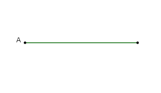
Εἰ μὲν οὖν πρῶτός ἐστιν ὁ Α, γεγονὸς ἂν εἴη τό ἐπιταχθέν. εἰ δὲ σύνθετος, μετρήσει τις αὐτὸν πρῶτος ἀριθμός.
῞Απας ἄρα ἀριθμὸς ἤτοι πρῶτός ἐστιν ἢ ὑπὸ πρώτου τινὸς ἀριθμοῦ μετρεῖται· ὅπερ ἔδει δεῖξαι.
᾿Αριθμῶν δοθέντων ὁποσωνοῦν εὑρεῖν τοὺς ἐλαχίστους τῶν τὸν αὐτὸν λόγον ἐχόντων αὐτοῖς.
῎Εστωσαν οἱ δοθέντες ὁποσοιοῦν ἀριθμοὶ οἱ Α, Β, Γ· δεῖ δὴ εὑρεῖν τοὺς ἐλαχίστους τῶν τὸν αὐτὸν λόγον ἐχόντων τοῖς Α, Β, Γ.
Οἱ Α, Β, Γ γὰρ ἤτοι πρῶτοι πρὸς ἀλλήλους εἰσὶν ἢ οὔ. εἰ μὲν οὖν οἱ Α, Β, Γ πρῶτοι πρὸς ἀλλήλους εἰσίν, ἐλάχιστοί εἰσι τῶν τὸν αὐτὸν λόγον ἐχόντων αὐτοῖς.
Εἰ δὲ οὔ, εἰλήφθω τῶν Α, Β, Γ τὸ μέγιστον κοινὸν μέτρον ὁ Δ, καὶ ὁσάκις ὁ Δ ἕκαστον τῶν Α, Β, Γ μετρεῖ, τοσαῦται μονάδες ἔστωσαν ἐν ἑκάστῳ τῶν Ε, Ζ, Η.
καὶ ἕκαστος ἄρα τῶν Ε, Ζ, Η ἕκαστον τῶν Α, Β, Γ μετρεῖ κατὰ τὰς ἐν τῷ Δ μονάδας. οἱ Ε, Ζ, Η ἄρα τοὺς Α, Β, Γ ἰσάκις μετροῦσιν· οἱ Ε, Ζ, Η ἄρα τοῖς Α, Β, Γ ἐν τῷ αὐτῷ λόγῳ εἰσίν.
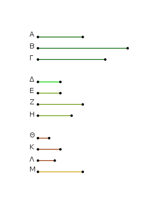
λέγω δή, ὅτι καὶ ἐλάχιστοι. εἰ γὰρ μή εἰσιν οἱ Ε, Ζ, Η ἐλάχιστοι τῶν τὸν αὐτὸν λόγον ἐχόντων τοῖς Α, Β, Γ, ἔσονται [τινες] τῶν Ε, Ζ, Η ἐλάσσονες ἀριθμοὶ ἐν τῷ αὐτῷ λόγῳ ὄντες τοῖς Α, Β, Γ.
ἔστωσαν οἱ Θ, Κ, Λ· ἰσάκις ἄρα ὁ Θ τὸν Α μετρεῖ καὶ ἑκάτερος τῶν Κ, Λ ἑκάτερον τῶν Β, Γ. ὁσάκις δὲ ὁ Θ τὸν Α μετρεῖ, τοσαῦται μονάδες ἔστωσαν ἐν τῷ Μ· καὶ ἑκάτερος ἄρα τῶν Κ, Λ ἑκάτερον τῶν Β, Γ μετρεῖ κατὰ τὰς ἐν τῷ Μ μονάδας.
καὶ ἐπεὶ ὁ Θ τὸν Α μετρεῖ κατὰ τὰς ἐν τῷ Μ μονάδας, καὶ ὁ Μ ἄρα τὸν Α μετρεῖ κατὰ τὰς ἐν τῷ Θ μονάδας. διὰ τὰ αὐτὰ δὴ ὁ Μ καὶ ἑκάτερον τῶν Β, Γ μετρεῖ κατὰ τὰς ἐν ἑκατέρῳ τῶν Κ, Λ μονάδας· ὁ Μ ἄρα τοὺς Α, Β, Γ μετρεῖ.
καὶ ἐπεὶ ὁ Θ τὸν Α μετρεῖ κατὰ τὰς ἐν τῷ Μ μονάδας, ὁ Θ ἄρα τὸν Μ πολλαπλασιάσας τὸν Α πεποίηκεν. διὰ τὰ αὐτὰ δὴ καὶ ὁ Ε τὸν Δ πολλαπλασιάσας τὸν Α πεποίηκεν. ἴσος ἄρα ἐστὶν ὁ ἐκ τῶν Ε, Δ τῷ ἐκ τῶν Θ, Μ.
ἔστιν ἄρα ὡς ὁ Ε πρὸς τὸν Θ, οὕτως ὁ Μ πρὸς τὸν Δ. μείζων δὲ ὁ Ε τοῦ Θ· μείζων ἄρα καὶ ὁ Μ τοῦ Δ. καὶ μετρεῖ τοὺς Α, Β, Γ· ὅπερ ἐστὶν ἀδύνατον· ὑπόκειται γὰρ ὁ Δ τῶν Α, Β, Γ τὸ μέγιστον κοινὸν μέτρον.
οὐκ ἄρα ἔσονταί τινες τῶν Ε, Ζ, Η ἐλάσσονες ἀριθμοὶ ἐν τῷ αὐτῷ λόγῳ ὄντες τοῖς Α, Β, Γ. οἱ Ε, Ζ, Η ἄρα ἐλάχιστοί εἰσι τῶν τὸν αὐτὸν λόγον ἐχόντων τοῖς Α, Β, Γ· ὅπερ ἔδει δεῖξαι.
Δύο ἀριθμῶν δοθέντων εὑρεῖν, ὃν ἐλάχιστον μετροῦσιν ἀριθμόν.
῎Εστωσαν οἱ δοθέντες δύο ἀριθμοὶ οἱ Α, Β· δεῖ δὴ εὑρεῖν, ὃν ἐλάχιστον μετροῦσιν ἀριθμόν.
Οἱ Α, Β γὰρ ἤτοι πρῶτοι πρὸς ἀλλήλους εἰσὶν ἢ οὔ. ἔστωσαν πρότερον οἱ Α, Β πρῶτοι πρὸς ἀλλήλους, καὶ ὁ Α τὸν Β πολλαπλασιάσας τὸν Γ ποιείτω· καὶ ὁ Β ἄρα τὸν Α πολλαπλασιάσας τὸν Γ πεποίηκεν. οἱ Α, Β ἄρα τὸν Γ μετροῦσιν. λέγω δή, ὅτι καὶ ἐλάχιστον.
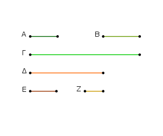
εἰ γὰρ μή, μετρήσουσί τινα ἀριθμὸν οἱ Α, Β ἐλάσσονα ὄντα τοῦ Γ. μετρείτωσαν τὸν Δ. καὶ ὁσάκις ὁ Α τὸν Δ μετρεῖ, τοσαῦται μονάδες ἔστωσαν ἐν τῷ Ε, ὁσάκις δὲ ὁ Β τὸν Δ μετρεῖ, τοσαῦται μονάδες ἔστωσαν ἐν τῷ Ζ.
ὁ μὲν Α ἄρα τὸν Ε πολλαπλασιάσας τὸν Δ πεποίηκεν, ὁ δὲ Β τὸν Ζ πολλαπλασιάσας τὸν Δ πεποίηκεν· ἴσος ἄρα ἐστὶν ὁ ἐκ τῶν Α, Ε τῷ ἐκ τῶν Β, Ζ. ἔστιν ἄρα ὡς ὁ Α πρὸς τὸν Β, οὕτως ὁ Ζ πρὸς τὸν Ε. οἱ δὲ Α, Β πρῶτοι, οἱ δὲ πρῶτοι καὶ ἐλάχιστοι, οἱ δὲ ἐλάχιστοι μετροῦσι τοὺς τὸν αὐτὸν λόγον ἔχοντας ἰσάκις ὅ τε μείζων τὸν μείζονα καὶ ὁ ἐλάσσων τὸν ἐλάσσονα· ὁ Β ἄρα τὸν Ε μετρεῖ, ὡς ἑπόμενος ἑπόμενον.
καὶ ἐπεὶ ὁ Α τοὺς Β, Ε πολλαπλασιάσας τοὺς Γ, Δ πεποίηκεν, ἔστιν ἄρα ὡς ὁ Β πρὸς τὸν Ε, οὕτως ὁ Γ πρὸς τὸν Δ. μετρεῖ δὲ ὁ Β τὸν Ε· μετρεῖ ἄρα καὶ ὁ Γ τὸν Δ ὁ μείζων τὸν ἐλάσσονα· ὅπερ ἐστὶν ἀδύνατον. οὐκ ἄρα οἱ Α, Β μετροῦσί τινα ἀριθμὸν ἐλάσσονα ὄντα τοῦ Γ. ὁ Γ ἄρα ἐλάχιστος ὢν ὑπὸ τῶν Α, Β μετρεῖται.
Μὴ ἔστωσαν δὴ οἱ Α, Β πρῶτοι πρὸς ἀλλήλους, καὶ εἰλήφθωσαν ἐλάχιστοι ἀριθμοὶ τῶν τὸν αὐτὸν λόγον ἐχόντων τοῖς Α, Β οἱ Ζ, Ε· ἴσος ἄρα ἐστὶν ὁ ἐκ τῶν Α, Ε τῷ ἐκ τῶν Β, Ζ. καὶ ὁ Α τὸν Ε πολλαπλασιάσας τὸν Γ ποιείτω· καὶ ὁ Β ἄρα τὸν Ζ πολλαπλασιάσας τὸν Γ πεποίηκεν· οἱ Α, Β ἄρα τὸν Γ μετροῦσιν. λέγω δή, ὅτι καὶ ἐλάχιστον.
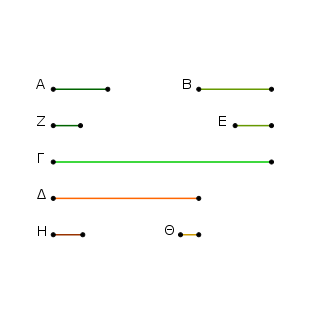
εἰ γὰρ μή, μετρήσουσί τινα ἀριθμὸν οἱ Α, Β ἐλάσσονα ὄντα τοῦ Γ. μετρείτωσαν τὸν Δ. καὶ ὁσάκις μὲν ὁ Α τὸν Δ μετρεῖ, τοσαῦται μονάδες ἔστωσαν ἐν τῷ Η, ὁσάκις δὲ ὁ Β τὸν Δ μετρεῖ, τοσαῦται μονάδες ἔστωσαν ἐν τῷ Θ. ὁ μὲν Α ἄρα τὸν Η πολλαπλασιάσας τὸν Δ πεποίηκεν, ὁ δὲ Β τὸν Θ πολλαπλασιάσας τὸν Δ πεποίηκεν.
ἴσος ἄρα ἐστὶν ὁ ἐκ τῶν Α, Η τῷ ἐκ τῶν Β, Θ· ἔστιν ἄρα ὡς ὁ Α πρὸς τὸν Β, οὕτως ὁ Θ πρὸς τὸν Η. ὡς δὲ ὁ Α πρὸς τὸν Β, οὕτως ὁ Ζ πρὸς τὸν Ε· καὶ ὡς ἄρα ὁ Ζ πρὸς τὸν Ε, οὕτως ὁ Θ πρὸς τὸν Η. οἱ δὲ Ζ, Ε ἐλάχιστοι, οἱ δὲ ἐλάχιστοι μετροῦσι τοὺς τὸν αὐτὸν λόγον ἔχοντας ἰσάκις ὅ τε μείζων τὸν μείζονα καὶ ὁ ἐλάσσων τὸν ἐλάσσονα· ὁ Ε ἄρα τὸν Η μετρεῖ.
καὶ ἐπεὶ ὁ Α τοὺς Ε, Η πολλαπλασιάσας τοὺς Γ, Δ πεποίηκεν, ἔστιν ἄρα ὡς ὁ Ε πρὸς τὸν Η, οὕτως ὁ Γ πρὸς τὸν Δ. ὁ δὲ Ε τὸν Η μετρεῖ· καὶ ὁ Γ ἄρα τὸν Δ μετρεῖ ὁ μείζων τὸν ἐλάσσονα· ὅπερ ἐστὶν ἀδύνατον. οὐκ ἄρα οἱ Α, Β μετρήσουσί τινα ἀριθμὸν ἐλάσσονα ὄντα τοῦ Γ. ὁ Γ ἄρα ἐλάχιστος ὢν ὑπὸ τῶν Α, Β μετρεῖται· ὅπερ ἔπει δεῖξαι.
᾿Εὰν δύο ἀριθμοὶ ἀριθμόν τινα μετρῶσιν, καὶ ὁ ἐλάχιστος ὑπ᾿ αὐτῶν μετρούμενος τὸν αὐτὸν μετρήσει.
Δύο γὰρ ἀριθμοὶ οἱ Α, Β ἀριθμόν τινα τὸν ΓΔ μετρείτωσαν, ἐλάχιστον δὲ τὸν Ε· λέγω, ὅτι καὶ ὁ Ε τὸν ΓΔ μετρεῖ.
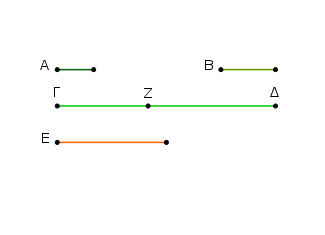
Εἰ γὰρ οὐ μετρεῖ ὁ Ε τὸν ΓΔ, ὁ Ε τὸν ΔΖ μετρῶν λειπέτω ἑαυτοῦ ἐλάσσονα τὸν ΓΖ. καὶ ἐπεὶ οἱ Α, Β τὸν Ε μετροῦσιν, ὁ δὲ Ε τὸν ΔΖ μετρεῖ, καὶ οἱ Α, Β ἄρα τὸν ΔΖ μετρήσουσιν. μετροῦσι δὲ καὶ ὅλον τὸν ΓΔ· καὶ λοιπὸν ἄρα τὸν ΓΖ μετρήσουσιν ἐλάσσονα ὄντα τοῦ Ε· ὅπερ ἐστὶν ἀδύνατον. οὐκ ἄρα οὐ μετρεῖ ὁ Ε τὸν ΓΔ· μετρεῖ ἄρα· ὅπερ ἔδει δεῖξαι.
Τριῶν ἀριθμῶν δοθέντων εὑρεῖν, ὃν ἐλάχιστον μετροῦσιν ἀριθμόν.
῎Εστωσαν οἱ δοθέντες τρεῖς ἀριθμοὶ οἱ Α, Β, Γ· δεῖ δὴ εὑρεῖν, ὃν ἐλάχιστον μετροῦσιν ἀριθμόν.
Εἰλήφθω γὰρ ὑπὸ δύο τῶν Α, Β ἐλάχιστος μετρούμενος ὁ Δ. ὁ δὴ Γ τὸν Δ ἤτοι μετρεῖ ἢ οὐ μετρεῖ. μετρείτω πρότερον. μετροῦσι δὲ καὶ οἱ Α, Β τὸν Δ· οἱ Α, Β, Γ ἄρα τὸν Δ μετροῦσιν. λέγω δή, ὅτι καὶ ἐλάχιστον.
εἰ γὰρ μή, μετρήσουσιν [τινα] ἀριθμὸν οἱ Α, Β, Γ ἐλάσσονα ὄντα τοῦ Δ. μετρείτωσαν τὸν Ε. ἐπεὶ οἱ Α, Β, Γ τὸν Ε μετροῦσιν, καὶ οἱ Α, Β ἄρα τὸν Ε μετροῦσιν. καὶ ὁ ἐλάχιστος ἄρα ὑπὸ τῶν Α, Β μετρούμενος [τὸν Ε] μετρήσει. ἐλάχιστος δὲ ὑπὸ τῶν Α, Β μετρούμενός ἐστιν ὁ Δ· ὁ Δ ἄρα τὸν Ε μετρήσει ὁ μείζων τὸν ἐλάσσονα· ὅπερ ἐστὶν ἀδύνατον. οὐκ ἄρα οἱ Α, Β, Γ μετρήσουσί τινα ἀριθμὸν ἐλάσσονα ὄντα τοῦ Δ· οἱ Α, Β, Γ ἄρα ἐλάχιστον τὸν Δ μετροῦσιν.
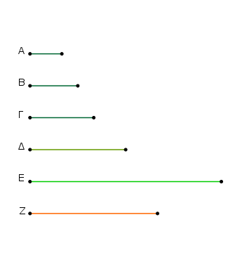
Μὴ μετρείτω δὴ πάλιν ὁ Γ τὸν Δ, καὶ εἰλήφθω ὑπὸ τῶν Γ, Δ ἐλάχιστος μετρούμενος ἀριθμὸς ὁ Ε.
ἐπεὶ οἱ Α, Β τὸν Δ μετροῦσιν, ὁ δὲ Δ τὸν Ε μετρεῖ, καὶ οἱ Α, Β ἄρα τὸν Ε μετροῦσιν. μετρεῖ δὲ καὶ ὁ Γ [τὸν Ε· καὶ] οἱ Α, Β, Γ ἄρα τὸν Ε μετροῦσιν. λέγω δή, ὅτι καὶ ἐλάχιστον.
εἰ γὰρ μή, μετρήσουσί τινα οἱ Α, Β, Γ ἐλάσσονα ὄντα τοῦ Ε. μετρείτωσαν τὸν Ζ. ἐπεὶ οἱ Α, Β, Γ τὸν Ζ μετροῦσιν, καὶ οἱ Α, Β ἄρα τὸν Ζ μετροῦσιν· καὶ ὁ ἐλάχιστος ἄρα ὑπὸ τῶν Α, Β μετρούμενος τὸν Ζ μετρήσει.
ἐλάχιστος δὲ ὑπὸ τῶν Α, Β μετρούμενός ἐστιν ὁ Δ· ὁ Δ ἄρα τὸν Ζ μετρεῖ. μετρεῖ δὲ καὶ ὁ Γ τὸν Ζ· οἱ Δ, Γ ἄρα τὸν Ζ μετροῦσιν· ὥστε καὶ ὁ ἐλάχιστος ὑπὸ τῶν Δ, Γ μετρούμενος τὸν Ζ μετρήσει. ὁ δὲ ἐλάχιστος ὑπὸ τῶν Γ, Δ μετρούμενός ἐστιν ὁ Ε· ὁ Ε ἄρα τὸν Ζ μετρεῖ ὁ μείζων τὸν ἐλάσσονα· ὅπερ ἐστὶν ἀδύνατον. οὐκ ἄρα οἱ Α, Β, Γ μετρήσουσί τινα ἀριθμὸν ἐλάσσονα ὄντα τοῦ Ε. ὁ Ε ἄρα ἐλάχιστος ὢν ὑπὸ τῶν Α, Β, Γ μετρεῖται· ὅπερ ἔδει δεῖξαι.
᾿Εὰν ἀριθμὸς ὑπό τινος ἀριθμοῦ μετρῆται, ὁ μετρούμενος ὁμώνυμον μέρος ἕξει τῷ μετροῦντι.
᾿Αριθμὸς γάρ ὁ Α ὑπό τινος ἀριθμοῦ τοῦ Β μετρείσθω· λέγω, ὅτι ὁ Α ὁμώνυμον μέρος ἔχει τῷ Β.
῾Οσάκις γὰρ ὁ Β τὸν Α μετρεῖ, τοσαῦται μονάδες ἔστωσαν ἐν τῷ Γ. ἐπεὶ ὁ Β τὸν Α μετρεῖ κατὰ τὰς ἐν τῷ Γ μονάδας, μετρεῖ δὲ καὶ ἡ Δ μονὰς τὸν Γ ἀριθμὸν κατὰ τὰς ἐν αὐτῷ μονάδας, ἰσάκις ἄρα ἡ Δ μονὰς τὸν Γ ἀριθμὸν μετρεῖ καὶ ὁ Β τὸν Α.
ἐναλλὰξ ἄρα ἰσάκις ἡ Δ μονὰς τὸν Β ἀριθμὸν μετρεῖ καὶ ὁ Γ τὸν Α· ὃ ἄρα μέρος ἐστὶν ἡ Δ μονὰς τοῦ Β ἀριθμοῦ, τὸ αὐτὸ μέρος ἐστὶ καὶ ὁ Γ τοῦ Α. ἡ δὲ Δ μονὰς τοῦ Β ἀριθμοῦ μέρος ἐστὶν ὁμώνυμον αὐτῷ· καὶ ὁ Γ ἄρα τοῦ Α μέρος ἐστὶν ὁμώνυμον τῷ Β. ὥστε ὁ Α μέρος ἔχει τὸν Γ ὁμώνυμον ὄντα τῷ Β· ὅπερ ἔδει δεῖξαι.
᾿Εὰν ἀριθμος μέρος ἔχῃ ὁτιοῦν, ὑπὸ ὁμωνύμου ἀριθμοῦ μετρηθήσεται τῷ μέρει.
᾿Αριθμὸς γὰρ ὁ Α μέρος ἐχέτω ὁτιοῦν τὸν Β, καὶ τῷ Β μέρει ὁμώνυμος ἔστω [ἀριθμὸς] ὁ Γ· λέγω, ὅτι ὁ Γ τὸν Α μετρεῖ.
᾿Επεὶ γὰρ ὁ Β τοῦ Α μέρος ἐστὶν ὁμώνυμον τῷ Γ, ἔστι δὲ καὶ ἡ Δ μονὰς τοῦ Γ μέρος ὁμώνυμον αὐτῷ, ὃ ἄρα μέρος ἐστὶν ἡ Δ μονὰς τοῦ Γ ἀριθμοῦ, τὸ αὐτὸ μέρος ἐστὶ καὶ ὁ Β τοῦ Α· ἰσάκις ἄρα ἡ Δ μονὰς τὸν Γ ἀριθμὸν μετρεῖ καὶ ὁ Β τὸν Α.
ἐναλλὰξ ἄρα ἰσάκις ἡ Δ μονὰς τὸν Β ἀριθμὸν μετρεῖ καὶ ὁ Γ τὸν Α. ὁ Γ ἄρα τὸν Α μετρεῖ· ὅπερ ἔδει δεὶξαι.
᾿Αριθμὸν εὐρεῖν, ὃς ἐλάχιστος ὢν ἕξει τὰ δοθέντα μέρη.
῎Εστω τὰ δοθέντα μέρη τὰ Α, Β, Γ· δεῖ δὴ ἀριθμὸν εὑρεῖν, ὃς ἐλάχιστος ὢν ἕξει τὰ Α, Β, Γ μέρη.
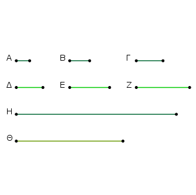
῎Εστωσαν γὰρ τοῖς Α, Β, Γ μέρεσιν ὁμώνυμοι ἀριθμοὶ οἱ Δ, Ε, Ζ, καὶ εἰλήφθω ὑπὸ τῶν Δ, Ε, Ζ ἐλάχιστος μετρούμενος ἀριθμὸς ὁ Η.
῾Ο Η ἄρα ὁμώνυμα μέρη ἔχει τοῖς Δ, Ε, Ζ. τοῖς δὲ Δ, Ε, Ζ ὁμώνυμα μέρη ἐστὶ τὰ Α, Β, Γ· ὁ Η ἄρα ἔχει τὰ Α, Β, Γ μέρη. λέγω δή, ὅτι καὶ ἐλάχιστος ὤν, εἰ γὰρ μή, ἔσται τις τοῦ Η ἐλάσσων ἀριθμός, ὃς ἕξει τὰ Α, Β, Γ μέρη. ἔστω ὁ Θ.
ἐπεὶ ὁ Θ ἔχει τὰ Α, Β, Γ μέρη, ὁ Θ ἄρα ὑπὸ ὁμωνύμων ἀριθμῶν μετρηθήσεται τοῖς Α, Β, Γ μέρεσιν. τοῖς δὲ Α, Β, Γ μέρεσιν ὁμώνυμοι ἀριθμοί εἰσιν οἱ Δ, Ε, Ζ· ὁ Θ ἄρα ὑπὸ τῶν Δ, Ε, Ζ μετρεῖται. καί ἐστιν ἐλάσσων τοῦ Η· ὅπερ ἐστὶν ἀδύνατον.
οὐκ ἄρα ἔσται τις τοῦ Η ἐλάσσων ἀριθμός, ὃς ἕξει τὰ Α, Β, Γ μέρη· ὅπερ ἔδει δεῖξαι.